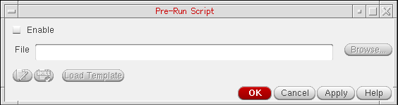
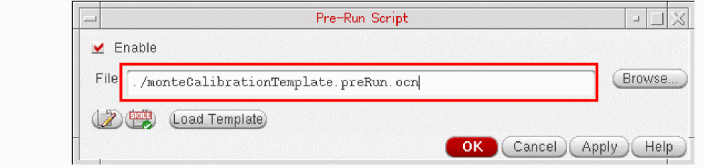
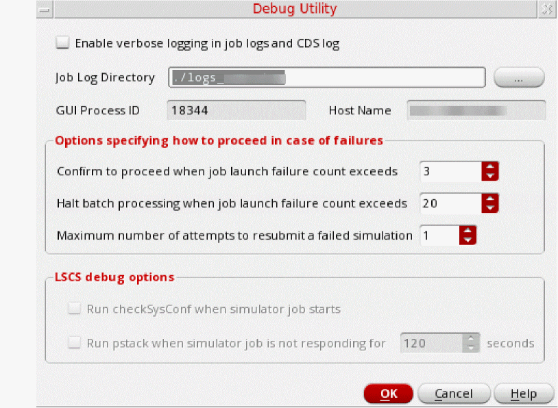

17
Running Simulations
Before running a simulation, you need to prepare a setup using job policy to specify the resources to be used for different services supporting the simulation. This chapter provides information about the setup details. In addition, it explains how to manage simulations when you need to suspend or resume a run, or to close a Virtuoso session while a simulation is in progress.
For details, refer to the following topics:
- The Simulation Flow in ADE Assembler
- Using Simulation Manager with LSCS
- Using Convergence Aids
- Specifying a Name for Simulation History
- Starting a Simulation
- Suspending and Resuming Netlisting or Simulation Runs
- Stopping a Simulation
- Canceling Simulations for Selected Tests or Corners
- Checking Run Status on the Progress Bar
- Stopping Jobs and Resubmitting Simulations
- Continuing the In-Process Simulations After ADE Assembler GUI Exits
- Viewing the ADE Assembler Logs After Running Simulations
- Viewing Job Status
- Viewing the Job Log
- Viewing the Simulation Output Log File
- Running an Incremental Simulation
- Simulating Only Unfinished or Erroneous Points
- Setting Up Debug Options
- Debugging Points
- Creating and Running an OCEAN Script
The Simulation Flow in ADE Assembler
All simulations running in ADE Assembler are distributed according to the job control method specified in the job policy.
ADE Assembler supports the following two job control modes:
-
LSCS: This is the default job control mode. It is a highly scalable job control mode that can handle thousands of netlisting and simulation jobs in parallel. This mode contains three systems: Virtuoso, Netlist Service, and Simulation Service. These systems work independently and concurrently with the shared queues of messages. The workflow being divided into separate processes means that the resources are consumed only when they are needed. Therefore, this model enables a more efficient exchange of information between these distinct processes.
For more details about how to configure setup and run simulation for LSCS mode, refer to Running Simulations with LSCS Job Control Mode. -
ICRP: This uses the IC Remote Processes that are started by ADE Assembler in the
virtuoso -nographmode. These remote processes perform the following tasks:- Generate netlists
- Run simulations
- Evaluate the results
- Return the results to the ADE Assembler user interface
Separate remote processes imply that the above tasks do not block the ADE Assembler user interface and still enable you to continue working when the simulation run is in progress.
An ICRP process may start a few child processes (clsbd, oaFSLockD, cdsNameServer, cdsServIpc) to perform some special tasks. These child processes may become daemon and continue to exist longer than the ICRP process itself. These processes should not be killed when the original ICRP job has exited because new ICRPs that are dependent on these daemon processes may have been started in the intervening time.
For more details about how to configure setup and run simulation for ICRP mode, refer to Running Simulations With ICRP Job Control Mode.
Using Simulation Manager with LSCS
With LSCS job control mode, you can use ADE simulation manager, also referred to as the simulation management service, which enables a decentralized and distributed architecture for the management of simulation jobs.
This architecture provides the following benefits:
- Offloads computation-intensive tasks, such as the management of simulation jobs, results plotting, and re-evaluation, from the Virtuoso session and makes the user interface of ADE Assembler more responsive to user interactions.
- Manages the progress of simulation jobs even if you close the host Virtuoso session that started the simulation. When you reopen the cellview, it reconnects the cellview to the simulation process if it is still in progress and you can control the simulations in the same way as you could before exiting Virtuoso.
- Provides a robust infrastructure that lets you reconnect with the running jobs and control them as before if Virtuoso stops abruptly during a simulation.
Using the simulation management service can be beneficial for complex designs and large setups that have a high simulation run time because it allows users to exit Virtuoso to release the memory reserved for other operations that could affect the simulation progress.
The Simulation Manager Infrastructure
The following diagram shows how the ADE simulation management tasks are offloaded from the ADE Assembler user interface. The simulation management service manages all netlisting and simulation jobs keeping the ADE Assembler UI available for other tasks.
This infrastructure is supported by a centralized ADE broker service that keeps a log of simulation manager services for all Virtuoso sessions and maestro cellviews running on a computer. The following diagram describes the architecture that uses this broker service.
The centralized ADE broker service is the key element of this infrastructure. This service can support both multi-user and single-user environments.
Related Topics
Running Simulations in a Multi-User Environment for Simulation Manager
Running Simulations in a Single-User Environment for Simulation Manager
Running Simulations in a Multi-User Environment for Simulation Manager
In a multi-user environment, multiple Simulation Manager services and an ADE Broker service can run independently on separate hosts in the network. When launching a Virtuoso Studio instance, you need to specify the address and port information of the ADE broker service to which you want to connect the Virtuoso session.
A multi-user environment lets multiple Virtuoso sessions started by multiple users on different hosts to connect to a common ADE broker.
It is recommended that a CAD team or an administrator starts the ADE Broker service on a remote host by running the following command:
maeBrokerMultiUser -start-daemon
; Starts a multi-user ADE broker and assigns an available port. It also returns
; that port number. Users can connect to the ADE broker by specifying the port
maeBrokerMultiUser -start-daemon -port port-number
; Starts a multi-user ADE broker at the given port
To connect to this ADE broker, each user must specify the broker address by running the following command before launching Virtuoso Studio:
setenv CDS_MAE_BROKER_ADDRESSbrokerHost:portNumber
setenv CDS_MAE_BROKER_ADDRESS host-lnx02:37431
When you run a simulation, Virtuoso Studio uses the Simulation Manager Default job policy to start a Simulation Manager service. You can customize the default job policy to use an LSF command to run this service on a remote host. Alternatively, you can use another job policy by setting the simulationServiceJobPolicy environment variable.
The connection with the Simulation Manager service is released after the simulation is successfully complete. The connection to the ADE broker is released after you close the Virtuoso Studio session.
In the event of a planned or an abrupt exit of Virtuoso Studio session while a simulation is in progress, the services run independently of the Virtuoso Studio session and take the in-progress simulation to completion.
The next time you launch Virtuoso Studio and reopen the maestro cellview for which simulation was started, the broker allows its reconnection to the services it was connected to in the previous Virtuoso Studio session. If the simulation running on a service is complete, it is not essential for the cellview to reconnect to the service. The results are saved in the history and can be viewed on the Results tab.
Related Topics
Managing Simulations with Simulation Manager
Exiting and Reconnecting with an In-progress Simulation
Running Simulations in a Single-User Environment for Simulation Manager
In a single-user environment, the ADE broker process can run on the same or a different host as that used by the Virtuoso Studio session.
You can start an ADE broker service by running the following command:
maeBroker -start-daemon
This command starts the ADE broker service and returns a port through which you can connect to the service.
When launching a Virtuoso Studio instance, you can specify the address and port information of the ADE broker service to which you want to connect the Virtuoso Studio session.
When you start a simulation run, Virtuoso launches a local or remote Simulation Manager service as per the specified job policy. Simulation Manager Default is the default job policy used for Simulation Manager. You can customize its settings or use another job policy by setting the simulationServiceJobPolicy environment variable.
In the event of a planned or an abrupt exit of the Virtuoso session while a simulation is in progress, the services take the in-progress simulations to closure.
The next time you launch Virtuoso Studio and reopen the maestro cellview for which simulation was started, the broker automatically reconnects the Virtuoso Session to the Simulation Manager service it was connected to in the previous Virtuoso session. This is because the maestro.simulation autoConnectBroker environment variable is set to t. If the simulation running on a service is complete, it is not essential for the cellview to reconnect to the service. The results are saved in the history and you can view those on the Results tab.
Challenges in a Single-User Environment
Running and managing ADE broker service in a single-user environment has the following challenges:
- Before launching Virtuoso, you need to always ensure that an ADE broker process is running.
-
You need to ensure that multiple ADE broker services are not running on the host. If multiple ADE brokers are running, you must use the
CDS_MAE_BROKER_ADDRESSshell variable to connect to the correct broker. - There are chances that an ADE broker is underutilized in a scenario when serving a single host.
Related Topics
Managing Simulations with Simulation Manager
Exiting and Reconnecting with an In-progress Simulation
Enabling Simulation Manager
You can enable simulation manager in ADE Assembler by ensuring that LSCS is selected in the Setup section of the Job Policy setup form.
License Requirement
To use this feature, you require the Virtuoso ADE Simulation Manager (95267) license.
Managing Simulations with Simulation Manager
When you run the simulation after enabling Use Simulation Manager, ADE Assembler automatically initiates the ADE broker and starts the simulation service. In this phase, the following message is displayed in the maestro cellview to indicate the progress of the initialization of simulation manager.
After a connection with the simulation service is established, the simulation is started and a history is created for the run.
The CIW log also shows the status of each step followed to connect to the ADE broker.
In the Run Summary assistant, the icon for this history indicates that the simulation is using the simulation manager.
Also note that the history name has a .RO suffix, which indicates that for simulations that use Simulation Manager, the results are saved in read-only histories. These histories are also locked to avoid any accidental modification in another maestro cellview. After the simulation run is complete, the read-only status is removed form the history and it is unlocked.
The simulation continues and the results are saved as usual. While the simulation is running in the background, you can continue to configure the setup or explore results saved in a history.
Exiting and Reconnecting with an In-progress Simulation
If you exit the maestro cellview or the Virtuoso session before the simulation is complete, ADE Assembler displays a dialog box, asking you to confirm whether to continue the simulation.
When you reopen the maestro cellview, if the simulation is in progress, Virtuoso displays the Reconnect to an Existing ADE Session form that shows a list of all services available for the cellview.
Select a service and click OK to reconnect to the same service.
The cellview is opened and the history corresponding to the simulation in progress is displayed showing the current status of the run.
If the simulation completes before you reopen the cellview, you can view the results saved in the history.
The following example shows a simulation run that was in progress in the previous maestro session.
When you reopen the cellview, the same state is maintained for the run. You can suspend, resume, stop, or manage it as required.
Explicitly Opening a Virtuoso Session Connected to a Simulation Manager Service
You can use the maeConnect command to display all available ADE broker services on the host.
Select an ADE Broker service from the drop-down list of service names. A list of Virtuoso sessions connected to the broker service are listed in the table.
Right-click a row and choose Open GUI to launch the Virtuoso session on the same host on which the Simulation Manager service is running and to open the maestro session.
If a particular simulation is not required to be completed or is stuck due to some network issues, right-click and choose Kill Job to stop the simulation and close the Virtuoso session.
Debugging Simulation Manager
While debugging simulations that use simulation manager, you can check the log of simulation manager in addition to the other logs files for netlist, simulation, or expression evaluation.
To open the simulation manager log:
-
Right-click the history that uses the simulation manager log and choose Simulation Manager Log.
-
ADE Assembler opens the
SimServicen.logfile saved for the maestro cellview, as shown below.

Debugging Points with Simulation Manager
To enable debugging of points in a simulation run using Simulation Manager, you can display the names of log files in the statistical information for each point.
Set the following environment variables:
(envSetVal "maestro.results" "defaultRunStatisticItems" 'string "memory,threads,recommendedThreads,jobId,host,jobLog,serviceLog,tranIntrinsicElapsedTime,cpuTime,cpuUtil")
(envSetVal "maestro.results" "enableRunStatisticInfoDisplay" 'boolean t)
When these variables are set, the statistical information on the Results tab shows the names of corresponding log files that you can check while debugging a point.
Related Topic
Viewing Log Files for a Data Point
Viewing a Consolidated Log for a History
Setting Up Job Policies
A job policy specifies the job control mode to be used to run simulations. In addition, it specifies the job distribution method: local, remote, or command; maximum number of jobs to be run at a time; and various job timeout settings.
The default job policy for ADE Assembler is Maestro Default. You can also define a custom job policy, save it with a unique name in the.cadence/jobpolicy directory and set it as default by using the
The order in which the job policy files are searched in the .cadence/jobpolicy directory is determined by the Cadence Setup Search File mechanism (CSF). To find this information, CSF uses the setup.loc file, which is an ASCII file that specifies the locations to be searched and the order in which they should be searched. For more information about the setup.loc file or how to edit search order, see
A job policy can be defined for:
- A single test. For more details, refer to Setting Up a Job Policy for a Test.
- A global job policy that is applied to all the tests that do not have their own job policies.
A job policy can be defined by using the Job Policy Setup form. For more details, refer to Setting Up the Default Job Policy.
While running a simulation, ADE Assembler looks for a job policy in the order given below and applies the policy that is found first:
- A test-specific job policy is applied to the test by using the Job Setup context-sensitive menu command for that test.
-
The default job policy specified by using the defaultJobPolicy environment variable in the
.csdenvfile. -
If no custom job policy setting is found, the
Maestro Defaultjob Policy is used.
Viewing the Global Job Policy
To view or modify the global job policy, choose the Options — Job Setup command in ADE Assembler.
Setting Up a Job Policy for a Test
You can set up a job policy for each test. This enables you to use different distributed processing resources or queues for different tests.
- To set up a job policy for a test, on the Data View pane, right-click a test and choose Job Setup. The Job Policy Setup - <test name> form is displayed. Modify the settings to suit your requirements and save the setup with a new policy name.
- To remove the job setup for a test and apply global job policy for it, on the Data View pane, right-click a test and choose Clear Job Setup.
Important Points Related to Job Policies
- Name of a test-specific job policy is shown in the test tooltip.
- If you want to use a custom job policy in every new maestro view, set the defaultJobPolicy environment variable to the name of your job policy. If the default policy is not required for a specific view, you can change it later.
- The job policy information is saved in the active setup database of a cellview and is applied in every subsequent use.
-
The job policy specified for a test overrides the global job policy specified using the Options – Job Setup commands. Information about the tests for which job policy is defined is shown in the global Job Policy Setup form, as shown below.

- To use the global job policy for all tests in the setup and avoid any overrides, click Clear All Per-test Job Setup. The local job policies defined for each test is cleared.
-
If all the tests have test-specific job policy, the global job policy specified through the Options – Job Setup command does not have any impact. If you specify a global job policy in this case, a message is displayed stating that the job policy will have no effect.
- If some tests are running with test-specific job policies whereas other are running with global job policy, the Options – Job Setup – Stop All command stops the simulations for only those tests that are using the global job policy.
- For every test-specific job policy, a separate ICRP process is started and that is not used for any other test.
- If you change the job policy for a test while an ICRP process was running for that test, ADE Assembler completes the simulation for the running point. After that, the job is terminated and a new ICRP process is started according to the new job policy.
- If you make changes to the job policy for a test, such as change the job policy name or replace the job policy, while an LSCS process was running for that test, ADE Assembler completes the simulation for the running point and terminates the job. Then, all jobs from that test that use this job policy are terminated and new jobs are restarted according to the modified job policy.
-
If you modify the Max Jobs value in the Job Policy Setup form, ADE Assembler completes the simulation for the running point before the job is terminated, and then rectifies the number of jobs by launching more jobs or terminating extra jobs.
You can use this functionality to terminate lengthy jobs and run simulation for critical jobs by freeing up the resources. If you have multiple jobs in the queue, you can modify the Max Jobs value and then terminate any unnecessary jobs from the Run Summary assistant.
Setting Up the Default Job Policy
To specify a customized default job policy:
- In the Job Policy Setup Form:
-
Click the Save button next to the Job Policy Name field.
The Save Job Policy form is displayed. - In this form, select the path for the job policy.
- Click OK.
-
Set this job policy name as the value for the following variable:
envSetVal( "adexl.icrpStartup" "defaultJobPolicy" 'string "myDefaultJobPolicy")By default, the job control mode is set to LSCS. Set the following variable to specify the default job policy for ICRP job control mode:envSetVal("maestro.distribute" "forceJobControlModeWhenViewOpen" 'cyclic "ICRP")
If you do not specify a job policy, the program applies the following defaults.
-
Distribution Method:
Local -
Max. Jobs:
1 -
Start Timeout:
300 (seconds) -
Linger Time:
300 (seconds) -
Show errors even if retrying test:
t -
Optimize Single Point Run:
t -
Communication Timeout:
180 (seconds) -
Do not estimate:
t - In the Default Value group box of the Resources tab:
- In the Scale Estimated Values by group box:
Specifying a Job Policy Name
To specify a job policy name, do the following:
-
Choose Options – Job Setup.
The Job Policy Setup form appears. -
In the Job Policy Name field, type a name for your job policy.
The job policy name must be alphanumeric with no spaces or special characters.
You can specify the default job policy name by setting the
Optimizing a Single Point Run
The Optimize Single Point Run check box selected by default in the Setup section of the Job policy Setup form. ADE Assembler optimizes the run according to the specified job distribution method in the job policy.
- ICRP: Runs the netlist generation, expression evaluation, and simulation tasks inside the ADE Assembler process.
- LSCS: Runs the netlist generation task in the ADE Assembler process. Expression evaluation and simulation are run in a remote process.
This saves the overhead of starting a separate process, thereby reducing the overall processing time.
This feature is not supported when:
- Simulating a single point for the EAD flow or for Monte Carlo sampling.
- The distribution method is set to Command and the command is non-interactive. An interactive command waits for the job to complete before returning control to the terminal.
Related environment variable:
Specifying a Distribution Method
You can specify a distribution method by using the Distribution Method drop-down list.
Depending on your setup, you can choose one of the following methods:
- Local – Runs simulations on the local host.
-
Remote-Host – Runs simulations on the remote host that you specify.
-
Command – Sends a command to the distributed processing software.On selecting, Command as the distribution method, the Command field is displayed. In this field, specify the command you want to use to start jobs.The command must adhere to these guidelines.Click Dry Run to check the network health before running a simulation. To run this check, ADE Assembler submits the number of jobs specified in the Max. Jobs field of the Job Policy Setup form without actually running the processes. The maximum limit for the number of jobs that can be submitted is 100.
- LBS – Uses Cadence Load Balancing Software.
The process owner should be the same user who is running simulations from ADE Assembler.
If the specified job distribution method is invalid, ADE Assembler checks whether a default distribution method is returned by the maeGetDefaultDistributionMethod custom SKILL function. You can define this function in the .cdsinit file as shown in the example below.
procedure(maeGetDefaultDistributionMethod()
"Command"
)
Specifying Max Jobs
The Max Jobs field specifies the maximum number of jobs that can run in an ADE Assembler session. This value along with the value specified in the Specify field on the Run Options form is used by ADE Assembler to assign jobs to the simulations running in a session.

To specify the maximum number of jobs that can run, do the following:
- In the Max. Jobs field, type the maximum number of jobs that can run at any time during your ADE Assembler session.
100. When Start Immediately is turned on, the program immediately submits the specified maximum number of jobs, or one job for every test, whichever is less, when you start ADE Assembler. This means that the defined number of processes are already running before you start the simulation. This saves the overhead of staring processes at time of running simulation.
To turn off this feature, do the following:
Important Points to Note
-
Even if already started, the life of an idle process is controlled by the Linger Time field whose default value is
300second. This implies that if a user launches a simulation 5 minutes after starting ADE Assembler, these processes would have already been killed and would restart when a simulation is run. - The Start Immediately check box is visible only for the ICRP mode.
- In a scenario where the resource requirements change dynamically, it is recommended not to select the Start Immediately check box. The initial process will start based on the previous resource requirement in the job setup, but since the resource requirement change for every new run, the previously started process may not fulfill the new requirements. Hence, the older processes need to be killed and new processes are launched on the computer that meets the resource requirement.
Specifying a Command for DRMS
Consider the following guidelines when creating a command for DRMS:
- It is expected that the process owner is the same user that is running simulations from ADE Assembler.
-
When the software submits a job, it runs a separate process. The software prepends the command you type in the Command field on the Job Policy Setup form to the job startup command. The program runs the entire command on the local host.
For example, you might type a DRMS command such asbsubfor LSF orqsubfor Sun Grid Engine (SGE) in the Command field:bsub -I -q
The program puts the process startup command at the end of the command you type as follows:queueNameother_bsub_optionsbsub -I -q
You are responsible for making sure that this command is valid, that thequeueNameother_bsub_optionsprocessStartupCommandbsubcommand you type can start a process on some host in the cluster using the specified options. -
It is always recommended to submit jobs in interactive mode to provide more control to ADE Assembler. The interactive mode provides the following two benefits:
It is recommended to submit Command jobs as interactive mode jobs.
The status of the job can be inferred from the local shell "proxy" process that exists in interactive mode. ADE Assembler can also sendSIGTERM, an interrupt, to the DRMS "proxy" process running on the local host, which is then passed to the remote process. If required, ADE Assembler can also force a job to terminate by using the proxy process.
Depending on the DRMS you are using, you can use the following commands to submit an interactive job:LSF: bsub with -K, -I, or -Is
SGE: qsh, qlogin, or qrsh
Network Computer: nc run with -I, -Ir, or -Il
TheA few scenarios where interactive jobs are useful are given below.-Kand-Ioptions are not compatible with the continueICRPRunOnAbruptGUIExit environment variable. When the variable is set totand the command mode uses-Ior-K, the ICRPs will still be interrupted when the parent process dies. If you want to use continueICRPRunOnAbruptGUIExit avoid using the interactive job mode.
Example 1: You run a simulation in batch mode. After some time, you stop the simulation while the job is pending before it got a chance to start. The job will remain pending in the DRMS system until it starts. The job will exit automatically when the DRMS starts. If you would have used the interactive mode instead, the job would have been killed by ADE Assembler immediately when stop the simulation.
Example 2: You run a simulation in batch mode, but you have specified a bad resource requirement (one that cannot be met). You then stop the simulation while the job is pending to correct the resource string. The job will remain pending in the DRMS system unless you kill it manually. If you would have used interactive mode instead, the job would have been automatically killed by ADE Assembler.
Example 3: If the process hangs for some reason, ADE Assembler can force termination when the command job is submitted as an interactive job.
Example 4: Jobs were submitted to the DRMS, but got killed somehow while they were in the pending state. In normal mode, ADE Assembler will keep waiting for these jobs to start until the start timeout has been reached. However, in the interactive mode, ADE Assembler can detect the status and re-submit the job rather than waiting for the start timeout.
Related environment variable: inferCommandICRPStatusFromProxy
Specifying an LBS Job Policy
ADE Assembler supports the following Distributed Resource Management Systems (DRMS):
|
Load Balancing System – Simple job distribution system ( |
|
To specify a load balancing system job policy, do the following:
- Specify a name for your job policy.
- In the Distribution Method drop-down list, select LBS.
Check boxes, fields, and list boxes related to specifying queues and hosts appear.
If you have set up the LBS DRMS, the form shows additional fields.

If you have set up the SGE DRMS, the form shows the fields relevant to SGE.
-
(For LSF and OpenLava only) Select the Queue check box and select an available queue from the drop-down list.Your system administrator determines the list of available queues. See System Administrator Information.If you do not select the Queue check box, the program uses default system queue.
-
(For LSF and OpenLava only) Select the Host check box and select an available host from the list area.
-
(For LSF and OpenLava only) In the Resource Requirements field, specify any additional resource requirements to submit the job.
The program uses these resource requirements along with the queue/host you specified to start the job. It is up to the load sharing facility software to resolve any conflicts between the queue/host and the resource requirements. - (For LSF and OpenLava only) In the Parallel Num. Processors field, specify the number of parallel processors to be used to run a simulation. To use this value, select the check box given to the right of this check box.
- (For LSF and OpenLava) In the Job Group field, specify the name of the job group to which you need to submit the job.
- (For LSF only) In the Service Class field, specify the name of the service class to which you need to submit the job.
- (For LSF only) Select the Memory Host Limit check box to apply the memory limit set for the selected LSF queue in the configuration file for LSF.
- (For SGE only) In the Hard Resource Req field, specify the resources that must be allocated before a job can be started.
For example, num_proc=4,mem_total=4G
- (For SGE only) In the Soft Resource Req field, specify the resources that a job needs but do not have to be allocated before the job can be started. The specified resources will be allocated to the job on an as-available basis.
-
(For SGE and OpenLava only) In the Job Priority field, specify the priority for the job being submitted relative to other pending jobs submitted by you. Default priority of a submitted job is
0. Users with administrator privileges can set this value from-1023to1024. Other users can set this value from-1023to0.
For example, you can set priority for a job as-500. - (For SGE only) In the Parallel Environment field, specify the name of the parallel environment.
- In the Parallel Num Processors field, specify the number of parallel processors to be used to run the submitted job.
- (Optional) Specify maximum job information.
- (Optional) Specify job timeouts.
- (Optional) Specify error reporting options.
- (Optional) Specify multiple run options.
-
Save your job policy.
For more information, see Saving or Deleting a Job Policy. - Click OK.
Specifying Job Timeouts for ICRP
To customize job timeout options, specify values in the fields of in the Timeouts group box of the Simulation tab of the Job Policy Setup form.
All the values in this section are specified in seconds. When a timeout value is set to 0, -1, or is left blank, the timeout is disabled. This leads to an unlimited wait time.
The following table describes the fields in the Timeouts section:
Related Topics
Troubleshooting Jobs that Stay Pending until Timeout
Specifying Error Reporting Options
To customize error reporting, you need to specify the options in the Error Reporting group box of the Simulation tab of the Job Policy Setup form.

-
To view the output log file of the remaining error points, right-click the job status icon on the Run Summary assistant pane.
By default, if multiple error points exist for a test, the program displays only the output log file of the first error point in the test. - To cause the program to display the output log files of all error points in the test, select the Show output log on error check box.
To cause the program to display the output log file on the occurrence of an error for a test, even if the ADE Assembler distribution system is retrying the test, select the Show errors even if retrying test check box.
Saving or Deleting a Job Policy
To save a job policy, do the following:
-
In the Job Policy Setup form, click Save.
The Save Job Policy form appears.
-
In the Select Path list, select the directory where you want to save the job policy.
You can save the job policy in one of the following directories in which you have write permissions or in the paths specified in yoursetup.locfile where you have write permissions:-
.cadencedirectory in the current directory -
The
.cadencedirectory in the path specified in theCDS_WORKAREAenvironment variable. -
$HOME/.cadence(the.cadencedirectory in your home directory) -
The
.cadencedirectory in the path specified in theCDS_PROJECTenvironment variable. -
The
.cadencedirectory in the path specified in theCDS_SITEenvironment variable.
-
-
Click OK.
The job policy is saved in thejobpolicydirectory under the selected directory. The job policy file has the.jpextension.
If a job policy file with the same name is found in more than one of the above locations, the first job policy file found in the first of the following locations is used:
-
.cadencedirectory in the current directory -
The
.cadencedirectory in the path specified in theCDS_WORKAREAenvironment variable. -
$HOME/.cadence(the.cadencedirectory in your home directory) -
The
.cadencedirectory in the path specified in theCDS_PROJECTenvironment variable. -
The
.cadencedirectory in the path specified in theCDS_SITEenvironment variable.
To delete a job policy, do the following:
-
Choose Options – Job Setup.
The Job Policy Setup form appears. - From the Job Policy Name drop-down list, select the job policy you want to delete.
- Click Delete.
Running Simulations with LSCS Job Control Mode
Large-Scale Cloud Simulation (LSCS) is a highly scalable job control mode that can handle thousands of netlisting and simulation jobs in parallel. It is a new job control mode that is available in addition to the existing IC Remote Processes (ICRP) mode. LSCS implements a new architecture to run simulations with better resource utilization. It also enables future scalability requirements, mainly cloud simulations.
How is LSCS Different from ICRP?
To understand the benefits provided by LSCS, it would help to first understand the difference in the underlying architecture of the two job control modes, as shown in the following figure:

In the ICRP mode, the netlisting, expression evaluation, and communication with the main GUI process are handled by a single Virtuoso process. It makes the system non-scalable for a large number of jobs because Virtuoso blocks a lot of resources even after netlisting is done and the simulation process is running independently.
Even though netlisting can be done in the main GUI process using the ignoreDesignChangesDuringRun environment variable, it makes the GUI unresponsive until netlisting is completed. Thus, ICRP job control mode is inefficient for very large designs.
LSCS Architecture
In LSCS mode, three systems, Virtuoso, Netlist Service, and Simulation Monitor, interact with each other to control different parts of a simulation run. These systems work independently and concurrently with a set of shared queues of messages.
The workflow is divided into separate processes that consume resources only when they are needed. Therefore, this model enables a more efficient exchange of information between these distinct processes.The following figure describes the architecture of LSCS job control mode in detail.

The LSCS job control mode is driven by message queues, which work on producer-consumer model. It is a decoupled structure in which a producer process places a task in a message queue. The consumer process processes the tasks in the message queue whenever it is free from its existing tasks. This architecture supports a scalable model for inter-process communication because no process is waiting for the other process to complete a particular task. This helps in avoiding a lot of situations where resources can reach a blocked state waiting for other processes to complete.
The most important advantage of this implementation is that the producer and the consumer can work at its respective speed. These features of LSCS mode enhance the user experience because the GUI process is free from undesirable interrupts.
Expression Evaluation Process
The expression evaluation process is an independent process that runs outside of Virtuoso to evaluate the expressions. This process does not require any access to the design-related information. Therefore, it is launched by Virtuoso as an independent process by using the vds executable. This process reads the initialization information from the .vdsinit file. It does not read .cdsinit.
vds in.vdsinit.
By default, the expression evaluation process does not call virtuoso because it does not need to access the design information. However, if your expressions rely on the design or layout information, you can explicitly switch to use virtuoso by setting the exprEval environment variable to "virtuoso":
envSetVal("maestro.exprEval" "binaryName" 'string "virtuoso")
After the above environment variable setting is done, the expression evaluator uses the virtuoso executable instead of vds.
Benefits of LSCS Job Control Mode
The various benefits of LSCS are listed below.
- It is a highly scalable job control mode because each process runs independently without impacting the other processes or making their resources hang. This allows reliable handling of thousands of netlisting and simulation jobs running in parallel.
- It checks if the design for different points is common. For the common designs using config sweep, it reuses the netlist across corners. This allows optimum resource utilization. If the design is same, a netlist can be reused in the following cases:
- It enables flexible distribution of the respective jobs. The jobs queued up for each process can be distributed to different farm computers locally or remotely. This is enabled by allowing different job policy definitions for simulation and netlisting, respectively. This significantly reduces the netlisting and simulation run time as compared to ICRP job control mode.
- The testbench design can be opened in read-only mode while netlisting is in progress. Therefore, when the simulation is in progress, you can modify the setup. Only design editing is not possible.
- Enables better debugging through improved log recording and introduction of new log views. For more information, refer to the section Viewing Log Files.
-
You can control the maximum iterations per simulation in the Monte Carlo Options form.

The following points describe how LSCS is better than ICRP.
- Due to sequential processing in ICRP, a simulation process has a large waiting time when the netlist generation is in progress. In LSCS, all the processes run independently.
- In ICRP, the netlist of the same design is generated repeatedly for different points in a design. However, LSCS reuses the netlist of the same design.
- In ICRP, large number of jobs can cause the GUI to freeze. However, LSCS allows running each job without impacting the other processes or hanging their resources.
- In order to save the netlist for a point from inadvertent changes, when netlisting is done in the GUI process, UI is frozen until all netlists are created. In LSCS, netlists are created in background processes and integrity of each netlist is maintained.
- In ICRP, all the resources used in netlisting, monitoring and expression evaluation are used up when a simulation is in progress. However, LSCS distributes all the processes and queues them at different farm computers. This minimizes the possibility of holding up of any resources for a process.
The LSCS job control mode has the following limitation:
- It is supported for only Cadence simulators, Spectre and AMS. If you set LSCS and run simulation using any third-party simulator, ADE Assembler prompts you to confirm whether it can change the job control mode to ICRP. Click OK to change the control mode to continue the simulation with ICRP, or stop simulation and change the simulator.
For the netlisting phase in LSCS, you might experience a slight performance dip in IC23.1 when compared to the earlier versions. This is caused by an additional check to improved stability in IC23.1. We ensure that all the necessary data is synchronized on the remote machines in the NFS before simulation starts. This may take a few seconds depending on the performance of your NFS system.
Configuring the Job Policy Setup for LSCS
Job distribution is done according to the distribution method set by the Job Control Mode option on the Job Policy Setup form in ADE Explorer or ADE Assembler.
To set up LSCS job control mode:
-
In ADE Explorer, choose Setup – Job Setup to open the Job Policy Setup form.
-
On the Simulation tab, select LSCS job control mode.

Each job can be configured to run one or more simulations. ADE Explorer and ADE Assembler internally uses these jobs to efficiently distribute time-consuming tasks that can be performed in parallel. Settings for these jobs such as how many remote processes to start, where the processes should run, on local or remote computers, or the time for which a remote process should stay active and wait for a simulation to run are set as a job policy.
- In LSCS mode, jobs for simulation and netlisting run independently. You must set separate job policies to define the type of resources to be used by them.
- Any changes made in a job policy might impact the simulations in other maestro sessions opened in the same Virtuoso session and using the same job policy. To avoid any impact on those sessions, you can save the policy with another name.
The following sections describe the settings on the various tabs of the Job Policy Setup form:
- Specifying a Job Policy Name
- Optimizing a Single Point Run
- Specifying a Distribution Method
- Specifying Max Jobs
- Specifying a Command for DRMS
- Specifying an LBS Job Policy
- Specifying Job Timeouts for ICRP
- Specifying Error Reporting Options
- Setting up the Netlisting Job Policy for LSCS
- Setting up the Resource Estimation Options for LSCS
Specifying Job Timeouts for LSCS
To customize job timeout options, specify values in the fields of in the Timeouts group box of the Simulation tab of the Job Policy Setup form.
All the values in this section are specified in seconds. When a timeout value is set to 0, -1, or is left blank, the timeout is disabled. This leads to an unlimited wait time.
The following table describes the fields in the Timeouts section:
Setting up the Netlisting Job Policy for LSCS
You can set up a job policy for netlisting jobs on the Netlisting tab of Job Policy Setup form.
The following table describes all the fields on this tab of the Job Policy Setup form.
| Field Name | Description |
|---|---|
|
Specifies that an ADE Assembler process must be used for netlist generation to optimize a simulation run. For more information, see Optimizing a Single Point Run. |
|
|
Specifies a distribution method by using the drop-down list. Depending on your setup, you can choose one of the following methods: |
|
|
Specifies the maximum number of netlist services that can run in an ADE Assembler or ADE Explorer session.
For the local or remote-host distribution method, it is recommended to keep the maximum jobs for netlisting services less than the number specified by the maxNetlistingJobsForLocal environment variable. By default, this variable is set to
50.
When the Start Immediately check box is selected, the program immediately submits the specified maximum number of jobs, or one job for every test, whichever is less, when you start ADE Explorer or ADE Assembler. This means that the defined number of LSCS processes are already running before you start the simulation. This saves the overhead of starting LSCS |
|
|
Specifies whether to launch the netlister as soon as a maestro view is opened. |
|
|
Specifies the time for which the tool should wait for the netlisting process to report back to ADE Assembler that it has started. The wait time starts as soon as ADE submits the job. |
|
|
Specifies the time to wait for a netlisting job to complete. It starts as soon as a netlisting job is initiated by ADE |
|
|
Specifies the number of seconds after which you want the program to kill a remote job after the netlist is generated. |
|
|
Specifies the number of seconds to wait for the process to report back to ADE Assembler that the Message Passing System (MPS) communication has been successfully established. This value is helpful in troubleshooting a pending job. |
Related Topics
Troubleshooting Jobs that Stay Pending until Timeout
Setting up the Resource Estimation Options for LSCS
On the Resources tab of Job Policy Setup form you can specify options for disk space usage and for CPU and memory data estimation.
The following table describes all the fields on this tab of the Job Policy Setup form.
| Form Field | Description |
|---|---|
|
Shows the estimated memory requirement to run the current simulation run. This feature is enabled by using the options given in the CPU and Memory Data group box. |
|
|
Enables checking of the disk space available in user quota. If you want to alert when the available disk space is less than the given space, select this check box to check for user quota of disk space. |
|
|
Specifies the command to be run to check the user quota. The command must return an output in the format
For example:
you can also specify the name of a script that returns this value. For example: If you enter an invalid command, Spectre displays a question giving you choice to either continue the simulation run without disk space check based on user quota or to cancel the run and correct the command. |
|
|
Enables checking of the available disk space when a simulation run is started. |
|
|
- Automatically suspend simulations if the disk space is insufficient |
Enables automatic suspension of all the simulations in progress whenever the available disk space falls below the minimum threshold specified in the Minimum disk space to be maintained (in MB) field. For more details, see Suspending Simulations Automatically When the Disk Space is Low. |
|
Disables estimation of processors and memory required for the current simulation. In this case, you can yourself specify the required number of processors to be used to distribute simulations.
When you disable estimation for LBS DRMS, select the check box to the right of the Parallel Num. Processors field on the Simulation tab of the Job Policy Setup form and specify a value in it. If you clear the check box given to the right of the Parallel Num. Processors field, the value given in the field is also cleared. In such a case, you should select any one of the other two options in the CPU and Memory Data field to get an estimate of resources required.
|
|
|
Enables resource estimation. When this option is selected, ADE Assembler runs the If the simulation that estimates resources does not return valid results, ADE Assembler uses the data from a history, if available, or the default values specified in the Default Value section on this tab. See also: How ADE Explorer and ADE Assembler Estimate Resources?. |
|
|
Enables resource estimation. When this option is selected, ADE Assembler checks the resources required from the Spectre log file of the most recent history. It uses the maximum memory and processors required across all points. Before reusing the data from a history, ADE Assembler compares the following components in the setup of the history with that of the active setup: If any mismatch is found, ADE Assembler reruns resource estimation based on the active setup. If no history data is available, the tool can either use the default values specified in the Default Value group box or run a simulation to estimate resources. |
|
|
Specifies the default number of CPUs required
Default value: If you know the resource requirements for the simulations you are running, you can specify the default values and select the Use Default Values option in the Provide CPU and Memory Data group box. |
|
|
Specifies that the simulation for resource estimation needs to be run on the local computer irrespective of the distribution methods set on the Simulation tab. This option is helpful when you cannot run simulations on a local computer. |
|
|
Specifies that the simulation for resource estimation needs to be run using the distribution method specified on the Simulation tab. This option helps to calculate an accurate estimate of resource requirement because it uses the same remote computers that are required to run the simulations. |
|
|
Specifies the value by which the estimated value of memory requirement should be scaled. |
|
|
Specifies the value by which the estimated value of CPU requirement should be scaled. |
|
How ADE Explorer and ADE Assembler Estimate Resources?
To run resource estimation, ensure the following:
-
In the High Performance Simulation Options form, the Manual option is selected for Multi-Threading and the #Threads field is set to
lsf. -
On the Simulation tab of the Job Policy Options form, the Distribution Method field is set to
LBSand the resource requirements string contains the%CPU_ESTand%MEM_ESTtemplates. - On the Resources tab of the Job Policy Options form, the Always run simulation to estimate data option is selected.
With these settings, ADE Explorer and ADE Assembler runs the +query=all Spectre command before running simulations. It reads the estimated CPU and memory information returned by Spectre and substitutes the values in the %CPU_EST and %MEM_EST templates in the LBS resource string. These resource requirements are used by the distribution method to allocate the required resources for simulation.
When the Reuse history data if available option is selected, the tool uses the resource estimation data from a previous history. Similarly, when the Use default values option is selected, the tool uses the default values specified in the Default Value section of this form. In either case, before starting simulation, the tool prints a message in the CIW indicating the source of resource estimated for a run.
-
Spectre does not support resource estimation for the following run modes:
If these run modes are set, by default, ADE Assembler shows an error message and prompts you to select the Default Values group on the Resources tab of the Job Policy Setup form.
If you do not want to be prompted when the current run mode is not supported for resource estimation by Spectre, set theignoreRunModeCheckInResourceEstimationenvironment variable tot. When this variable is set tot, the tool uses values from an available history. If there is no history available, it uses the default memory and CPU value specified in the Default Values group on the Resources tab of the Job Policy Setup form. -
Spectre currently supports resource estimation for only hb and tran analyses. If the setup contains an enabled analysis other than these two, the tool automatically reuses values from an available history. If there is no history available, it uses the default memory and CPU value specified on the Resources tab of the Job Policy Setup form.
If you want to be notified when the current analysis is not supported for resource estimation by Spectre, set theignoreAnalysisCheckInResourceEstimationenvironment variable tonil. This variable lets you to decide whether to use the resource estimation values from any other history or the default values from the job policy. - Resource estimation is done for each test in the setup. If the global job policy is used by all tests, ADE Assembler uses the maximum CPU or memory value among the values estimated for all the tests. If the tests are using their own overridden job policies, resource estimation is run for each test individually. If multiple tests use the same policy, the maximum estimated CPU or memory value is used for all.
Running Resource Estimation for a Specific Corner
By default, ADE Assembler runs resource estimation on the nominal corner. If your setup contains corners that would require a higher level of resources than nominal, it is a better option to assess the resource requirement for a corner with the highest resource requirements.
You can specify a resource corner at the global level for all tests or override it for a specific test.
To specify a resource corner for all tests, do the following:
- In the Corners Setup form, add the corner with high resource requirements.
-
Select the corner name in the Resource Corner drop-down list below the toolbar on this form.
- Click OK to close the corners setup.
To override a resource corner for a specific test, do the following:
-
In the Data View assistant, right-click the test and choose Resource Corner.
The Select Corner for Resource Estimation form is displayed.
-
From the Resource Corner drop-down list, select the corner for which you want to run resource estimation for that test.
The global resource estimation corner is overridden for the test. This test-specific resource corner is added to the notes for the test. You can validate the resource corner in the tooltip for the test or right-click the test name and choose Notes to open the Add/Edit Notes form.
If a resource corner is specified, ADE Assembler runs resource estimation as described below.
- If the resource corner specified in the Corners Setup form is enabled for the current simulation run, resources are estimated for that corner. However, if the resource corner is disabled, the nominal corner is used.
- If the resource corner is disabled for a test, ADE Assembler uses the first enabled corner for that test.
- If the resource corner is a group corner, the first corner in that group is used.
- If a global resource corner is overridden for a particular test, estimation for that test is done by using the specified corner. For other tests, estimation is done by using the resource corner in the Corners Setup form.
Starting a Simulation
After you have selected a job control mode and completed the setup, run a simulation.
When a simulation is running, the status bar at the bottom of the ADE Explorer or ADE Assembler window shows the different stages of the simulation run. In addition, a progress bar on the bottom right of the window displays the information about the results directory, library, cell, and view.
Reviewing Simulation and Netlisting Progress
When you run a simulation, a netlist is generated and the Run Summary assistant appears in ADE Assembler. The Run Summary assistant shows the following information about the simulation in progress:
- The number of tests running
- The number of values varying (Point Sweeps)
- The number of corners
- The nominal corners
While ADE Explorer or ADE Assembler is preparing to run a simulation or during a run, you can check its status on the progress bar displayed on the Run Summary assistant pane. The progress bar is displayed to the right of the history item name.

-
The log files are written to the
logs_<username>/logs<n> directory. - The number of jobs launched for each process is driven by the Max. Jobs defined in the respective job policy.
- Simulation jobs are launched only after the netlists are available.
- In LSCS, netlisting is done in the beginning at the test level. If netlist creation at the test level fails, the status for all points is shown as netl err irrespective of their submission status. Therefore, it is possible that if you cancel any point, its status is shown as netl err.
Managing Jobs During Simulations
During a simulation, the Run Summary assistant shows the status of netlisting and simulation jobs that are running. You can check the status of each individual job by placing the pointer over it. A tooltip is displayed giving the details of the current simulation in progress and the total number of simulations completed by the job. An example is shown in the following figure.
Stopping Jobs and Resubmitting Simulations
Stopping a job is helpful in the following scenarios:
- When a job is submitted to a computer that is known to be slow or with limited memory. This information can be gathered from the tooltip of a job.
- When a particular job has simulated a significantly smaller than average number of simulations.
- When nearing the end of a run, only one or two jobs remain pending and are taking more than the expected time to complete the simulation for the current design points.
To stop a job and resubmit the simulation, right-click the job and choose Stop and Resubmit.
When you use this command, ADE Explorer or ADE Assembler does the following:
- The icon for the stopped job changes to one with a cross, and then disappears. A new job is created to replace the stopped job.
- The simulation that was running on the stopped job is placed at the beginning of the queue of the pending simulations. The simulation for this point is then submitted to the next available job.
- If no more simulations are pending, a new job may not be created.
Automatically Suspend Simulations When the Disk Space is Low
You can configure the commands to automatically suspend simulations when the disk space is low, and flag the appropriate information or warning messages.
To enable checking of disk space and automatic suspension of simulations depending on the configured settings:
- Choose Options – Job Setup to open the Job Policy Setup form.
-
Open the Resources tab.

-
Specify the following options in the Disk Space group:
-
Show warning for low disk: Select this check box to enable checking of the available disk space when a simulation run is started. ADE Assembler shows a warning in these cases:
- If the available disk space before running a simulation for the first point is less than the threshold value specified in the If the remaining disk space is less than _ MB field, a warning message is flagged to report about the unavailability of the required space and to confirm whether the run is to be continued.
-
For the Single Run, Sweeps, or Corners run mode, after the first design point is simulated, the disk space consumed for that point is used to estimate the total space required to run simulations for all the points. If the remaining (available – estimated) disk space falls below the threshold, ADE Assembler shows the following types of messages:
- If the remaining (available – estimated) disk space is more than the threshold specified in the If the remaining disk space is less than field, an information message is flagged to report the same.
- If the remaining (available – estimated) disk space is less than or equal to the threshold specified in the If the remaining disk space is less than field, a warning message is flagged to report the same. It is recommended to manually suspend the simulation run for the current history, free up the disk space, and resume the run. To manually suspend a job, right-click the progress bar of the history in the Run Summary pane and click Suspend.
Consider an example of a simulation run for three sweep points. - The simulation of the first design point used: 15 MB - The estimated disk space for the remaining two points: 30 MB - The available disk space after the first design point is simulated: 115 MB - The threshold value for disk space: 100 MB - The estimated remaining disk space = 115 – 30 = 85 MB, which is less than the threshold value In this scenario, after the simulation for the first design point is complete, a warning message is displayed to clear disk space.
-
Automatically suspend simulations if the disk space is insufficient: Select this check box to enable Spectre to automatically suspend all in-progress simulations whenever the available disk space falls below the minimum threshold specified in the Minimum disk space to be maintained (in MB) field.
By default, the suspended jobs remain in that state until you resume those. However, you can select the Automatically resume simulations when the disk space becomes available check box to enable Spectre to automatically resume the suspended jobs. When this check box is selected, Spectre internally checks for the availability of disk the disk space ans resumes the suspended simulations.
-
Show warning for low disk: Select this check box to enable checking of the available disk space when a simulation run is started. ADE Assembler shows a warning in these cases:
-
Click OK to close the form.
ADE Assembler uses the settings specified on this form to constantly monitor the available and estimated disk space, and displays appropriate messages on the Results tab. If a simulation is automatically suspended, the status on the Run Summary tab and the Results tab is updated, as shown below.
.
Restarting the Jobs
If the tool tip of a job shows the name of the slow computer and you observe that the currently running simulation is taking an unusually long time to complete, you can stop the job and restart it. The queuing mechanism will redistribute the job to another computer that has better resources.
Right-click and use the following commands in the context-sensitive menu of a job to restart it:
- Restart: Allows the current activities of a job to complete before stopping and then restarting the job.
- Force Restart: Forces the current activities of a job to halt immediately and forces the job to restart.
Viewing Log Files
For a simulation run using LSCS run mode, you can view the log files in two ways:
Viewing Log Files for a Data Point
To view the logs for a data point:
-
Right-click a result value in the
DetailorDetail-Transposeresults view. - Click View Log Messages and choose one of the following types of logs you want to view: ADE Assembler opens a new window to display the log.
Message Viewer
This log view combines the messages for a specified point from the netlisting, simulation, and expression evaluation jobs that were involved in running a simulation for that point.
The tool extracts all the information displayed for a simulation process, for example, the peak resident memory, from the Spectre output that is saved in the Spectre output log.
To view the messages of a specific severity level, choose the level name from the Level drop-down list at the bottom of this viewer. The possible levels are: debug, event, process, info, warn, and error.
In addition, you can use the search bar to filter the information based on specific keywords in the Message column.
Netlist Job
The netlist log file shows netlisting logs for a specific point. It includes various details, such as testbench details, variables and parameters for netlist, netlist directory, and netlisting errors (if any).
Job Log
The job log contains information about LSCS jobs and all the simulations that were run on that job. It includes various details, such as the Cadence software version number, operating system version, working directory, the testbench details, variables and parameters for every run, simulator details, results location, data directory, netlist directory, and simulation errors (if any).
Simulator Log
This log file shows information about simulation jobs for the specified data point. It includes various details, such as the Cadence software version number, operating system version, working directory, design path, simulator, results location, data directory, start time and end time for the simulation run, the number of points completed, and the simulation errors (if any).
Expression Evaluator Log
This log file contains the information about the configuration setup, working directory, testbench details, variables, and parameters of the expression evaluator process for the specified point.
Viewing a Consolidated Log for a History
To view a consolidated report for a simulation run so that you can read the logs from all sources in one log viewer window, right-click a history and choose Log Viewer.
The Log Viewer window for the history is displayed.
Observe that the Tool column in this table indicates the source of the log information. For example, row 23 is reported by the netlist service, row 24 by the expression evaluator, and row 28 by the Spectre simulator.
You can use the controls at the bottom of the viewer to filter the information displayed in the table. For example, you can choose error from the Level drop-down list and test DCGain from the Test drop-down list to view all errors reported for that test.
Click Refresh to view the logs for a latest run job.
Saving Logs in a Compressed File
In addition to customizing the display of information, you can save the log in a tar file or zip file and share with others for debugging or analysis of the netlisting and simulation run.
To save all logs for a history in a compressed file:
- Right-click a history in the History tab of the Data View assistant and choose Log Viewer.
-
The log view that combines the messages for a specified point from all the jobs like netlisting, simulation, and expression evaluation.
-
Click Log Packer.
The Log Packer window is displayed.
- Click the browse button to the right of the Pack Destination field and choose the location where you want to save the compressed log files.
- Review the selected tools and if required, deselect the check box corresponding to the tool for which you do not want to save logs.
- (Optional) To create a tar file, select As Tar.
- Click Pack to compress and save the compressed files at the specified location.
The Log Packer utility is available in the log viewer for the complete history. It is not available for an individual data point.
Using Job Logs for Debugging
You can use log files to view the debugging information for a simulation.
To view the logs for a data point:
-
Right-click a result value in the
DetailorDetail-Transposeresults view.
- Click View Log Messages to view any of the following logs:
- Review the information given in the log files and take appropriate steps to resolve the issues and to obtain the desired results.
- (Optional) By default, the log files show basic error, warning, or informational messages. If the information available in the log files is not sufficient and you need more details, use the following environment variables to specify a higher debug level in which the tool saves additional details and displays more detailed messages:
Related Topics
Log Files for LSCS Job Control Mode
Log Files for LSCS Job Control Mode
The following table describes the available log files for LSCS job control mode.
Debug Utility Form
The Debug Utility form lets you set up options that help you save information useful for debugging of simulation runs. You can also specify certain next steps to be performed in case of a simulation failure.
| Field | Description |
|---|---|
|
Logs of the following details in the job log and CDS log:
|
|
|
Specifies the location in which to save the job logs. This field is useful when you select the Enable verbose logging in job logs and CDS log |
|
|
Specifies the path to the file where you want to save the values of the shell variables and environment variables as they are set in the current session.
For the environment variables, by default the tool saves values for the variables from the asimenv, auCore, adexl and maestro product categories. You can change this product list by using the
Only the environment variables that have been changed from their default values are written to the specified file.
Environment variable: envVarCategoriesForDump |
|
|
Saves the shell and cdsenv variables in the file specified by the Dump Shell and cdsenv Variables field. |
|
|
Displays the process ID of the current ADE Explorer or ADE Assembler window. |
|
|
Displays the host name of the computer on which you are running Virtuoso. |
|
|
Contains options that you can use to specify how you want to proceed in case of failures. |
|
|
Specifies the number of attempts of failed job launch after which an error message is displayed and the tool proceeds with the next job. |
|
|
Specifies the number of attempts of failed job launch after which the batch processing is stopped. |
|
|
Specifies the number of times ADE Explorer or ADE Assembler should try resubmitting a failed simulation. |
|
|
Contains options that help in gathering information that you can analyze while troubleshooting the simulations run in LSCS job control mode. You can view the results of these LSCS debug options in the job log for a data point. To access the job log, in the context-sensitive menu of a data point, click View Log Messages and choose Job Log. |
|
|
Runs the
The tool dumps the result of the Use this option when looking for additional information for jobs that are failing on some computers and you want to check whether the software on those computers is compatible. |
|
|
Run pstack when simulator job is not responding for __ seconds |
Runs the pstack command for the process running a particular simulation job. Use this option to get the stack trace for a process that remains unresponsive for the specified number of seconds. Depending on your requirements, you can modify the time limit for this option. |
|
Submits the number of jobs specified in the Max. Jobs field of the Job Policy Setup form without actually running the processes. This lets you check the network health before running a simulation. This maximum limit for the number of jobs is 100.
This option is applicable only when the specified job distribution method is |
Running Simulations With ICRP Job Control Mode
The ICRP job control model uses the IC Remote Processes that are started by ADE Assembler in the virtuoso -nograph mode. These process in turn, may start a few child processes (clsbd, oaFSLockD, cdsNameServer, cdsServIpc) to perform some special tasks.
ADE Assembler internally uses ICRP jobs to efficiently distribute time-consuming tasks that can be performed in parallel. Settings for these jobs such as how many remote processes to start; where the processes should run, on local or remote computers; or the time for which a remote process should stay active and wait for a simulation to run; are set as a job policy.
For more information on managing the ICRP job control mode, see the following topics:
- Specifying a Job Policy Name
- Optimizing a Single Point Run
- Specifying a Distribution Method
- Specifying Max Jobs
- Specifying a Command for DRMS
- Specifying an LBS Job Policy
- Specifying Job Timeouts for ICRP
- Specifying Error Reporting Options
- Specifying Multiple Run Options
- Setting Up Resource Options
Specifying Multiple Run Options
To customize options to be used when running multiple runs in the same ADE Assembler session, you need to specify the options in the For Multiple runs group box of the Simulation tab of the Job Policy Setup form.
To specify the job option to be used when running multiple runs in the same ADE Assembler session, do one of the following in the For Multiple Runs group box.
- To cause the program to reassign a completed job for the current run to a new run, select the Reassign immediately for new run option.
- To cause the program to wait until all the jobs for the current run are completed before assigning the jobs to a new run, select the Wait until currently running points complete option.
Also see: Setting Up Run Options
Setting Up Resource Options
ADE Assembler provides a feature to estimate the memory and CPU resources required to run simulations. After completing the simulation setup, you can use this feature to run resource estimation for the defined tests, and ensure that the required memory and CPUs are available on the local or remote computer as defined by the job policy setup.
Shooting on the Choosing Analyses form. This feature is supported by MMSIM 14.1 ISR8 or later releases.By default, the resource estimation feature is disabled. You can enable and configure it using the Resources tab on the Job Policy Setup form shown below.
The following table describes the commands given on the Resources tab.
Setting Up Run Options
When you perform multiple ADE Assembler runs simultaneously (that is, an ADE Assembler run is already in progress and you click  again to start more runs simultaneously), the options specified on the Run Options form are used to allocate the available ICRPs or jobs. You can change the options on this form to control allocation of the ICRPs among various ADE Assembler runs.
again to start more runs simultaneously), the options specified on the Run Options form are used to allocate the available ICRPs or jobs. You can change the options on this form to control allocation of the ICRPs among various ADE Assembler runs.
In addition, the form also provides an option to enable checking and reporting of identical histories before running simulation. For more details, refer to Running an Incremental Simulation to Reuse Results.
To set up run options, in the ADE Assembler window, choose Options – Run Options.
t.The following table describes the commands available on the Run Options form:
| Command | Description |
|---|---|
|
Contains the options to specify how more than one ADE Assembler runs are to be performed |
|
Series |
Performs multiple ADE Assembler runs in series. In this case, only one run is performed at a particular point of time. If the number of available ICRPs (as specified by Max Jobs in the job policy) is greater than the number of points in the current ADE Assembler run, only the ICRPs required to run the points are used. The remaining ICRPs are not allocated to any subsequent run until the current ADE Assembler run is complete. |
Parallel |
Runs multiple ADE Assembler runs in parallel. If ICRPs are available, multiple ADE Assembler runs are started without waiting for the previous one to complete. The allocation of points or corners to ICRPs depends on the setting in the Number of jobs section on this form.
The default value for Run In is set to Series. To make Parallel as the default value, set the defaultRunInParallel environment variable to
t. |
|
Contains the option to control the display of results while a simulation run is in progress |
|
Manual Refresh |
When selected, the Yield view of the Results tab is not updated while the run is in progress. A command, Refresh to view results, is added to the toolbar of the Results tab. You can use this command to show or update the results at any time during or after the run. When you clear the Manual Refresh check box, the results are automatically displayed and refreshed on the Results tab while the simulation is in progress. You can control the state of the Manual Refresh check box by using the enableManualRefresh environment variable |
|
Contains the options to specify how the ICRPs are to be allocated among multiple ADE Assembler runs. |
|
Share resources equally |
When Run In is set to Parallel, this option shares the number of jobs among all the parallel runs equally.
For example, if Max Jobs is |
Specify |
When Run In is set to Parallel, this option specifies the maximum number of ICRPs to be allocated to each ADE Assembler run in parallel.
The value in the Specify field should not exceed the value of Max Jobs because in that case, the value in Specify is ignored.
If the value of Max Jobs is greater than the value in Specify, each ADE Assembler run gets the same number of ICRPs as specified in the Specify text box.
You can change the value of Specify between two ADE Assembler runs. For example, Max Jobs is set to
10. Before starting the first run, Specify is set to 4, so it gets four ICRPs. After this, if you change the value of Specify to 2 and start two more runs, the subsequent runs will get two ICRPs each.Also see: Examples of ICRP Allocation to Parallel Runs Based on Specify and Max Jobs |
|
Contains the options to detect changes in the simulation setup before running simulations. For details, refer to Reporting Identical Histories Before Running a Simulation. |
Examples of ICRP Allocation to Parallel Runs Based on Specify and Max Jobs
If Max Jobs=5 and Specify=2, the first ADE Assembler run will get two ICRPs and the subsequent runs will also get two ICRPs allocated to them. If there are only two runs in parallel, one ICRP still remains unallocated, as shown in the figure given below.
If Max Jobs=6 and Specify=4, the first ADE Assembler run will get four ICRPs. The next run initially gets the remaining two ICRPs. Depending on the value set for Reassign immediately for new runs job policy setting, ADE Assembler reassigns one of the ICRPs from the first run to the second run so that each run is using three ICRPs.
If Max Jobs=24 and Specify=8, the first run gets eight ICRPs. The next run will get another eight ICRPs. Eight more ICRPs still remain unallocated.
Reporting Identical Histories Before Running a Simulation
By default, before running a simulation, ADE Assembler does not compare the setup details with any of the existing histories. This can result in running more than one simulation with the same setup. For a resource-intensive simulation, this can block the resources and affect performance. To avoid this, you can use the Run Options form and select the options to compare the active setup with that of existing histories, and run simulation only if the setup is unique. If any identical history is found, it is reported.
To enable reporting of identical histories before running a simulation, perform the following steps:
-
Choose Options – Run Options.
The Run Options form is displayed.

-
Select the Enable reporting of identical histories check box.
All the check boxes given below this get enabled. These check boxes specify the type of changes you want to identify while comparing the active setup with a history.
The following table provides more details about the checks.
Type of changes Checks for Changes in setup database, such as test details, corners, device parameter, run mode and run options. This is selected by default.
While checking for identical histories, ADE Assembler does not compare the settings specified by the reportIdenticalHistoryIgnoreElementsList environment variable. You can modify the value of this variable to specify the type of elements you want to ignore while checking for identical histories.Changes in the schematic or config view of the design. Hierarchical schematic traversal is done to compare the timestamp of each schematic cellview with that of the maestro setup database.
Changes in simulation files, such as definition file and model file. To compare the simulation files, the tool stores the files obtained by parsing spectre.out of the latest run and compares their file hash with the corresponding file hash in the history database.
Any addition or removal of model files is detected along with the detection of changes in the setup database.
- Select the check boxes for the required type of changes you want to identify before running a new simulation. If no change is found, ADE Assembler shows a message that mentions that the setup details in the active setup are same as those of a history and prompts you to confirm that you still want to run a simulation. Other types of changes, for which the corresponding check boxes are not selected, are ignored.
- Click OK.
Important Points to Note
- The settings on the Run Options form are applicable for the current ADE Assembler session.
- This feature is supported only for Single Run, Sweeps, and Corners, Monte Carlo, Global Optimization, and Local Optimization run modes. If any other run mode is selected in the ADE Assembler setup, the Enable Reporting of Identical Histories check box on the Run Options form is disabled.
- By default, this feature is not enabled for any run mode. You can enable it for any one of the supported run modes (Single Run, Sweeps and Corners, Monte Carlo Sampling, Global Optimization, Local Optimization, Sensitivity Analysis) by setting the runModesForIdenticalHistoryCheck environment variable.
- This feature is supported for DSPF cellviews.
- This feature is supported for text cellviews stored in HDL files, such as Verilog, VerilogA, VerilogAMS, SystemVerilog, VHDL, VHDLAMS, PSpice, HSPICE, Spectre, and SPICE text files, in Virtuoso libraries. However, note that it compares only the master text cellview, and ignores any changes in the text files included or referenced in the master cellview.
-
If you want ADE Assembler to print in the CIW log the differences found in the active setup and the setup of a saved history, set the reportChangesAfterComparingSetupWithHistories environment variable to
t.
Running Pre-run Scripts before Simulation Runs
For each test, you can specify a pre-run script that contains a set of OCEAN commands to be run before the test is simulated. If a pre-run script is specified for an ADE Assembler test, for every point of evaluation, first the pre-run script is run and then the test is simulated for that point.
Using pre-run scripts, you can specify OCEAN commands that read the simulation setup for a test, run pre-simulation analyses for each simulation point and, if required, modify the simulation setup for that point. For example, you can run a script to calculate a calibrated value for a design variable and use that value in the main simulation run. To see an example, refer to Pre-run script Example for Monte Carlo Calibration.
In a pre-run script, you can use any OCEAN command. For example, you can use the desVar command to get the value of a design variable in an ADE Assembler test. To see how, refer to Pre-run Script Example. In addition, you use the following OCEAN commands that are specifically meant for use in pre-run scripts:
- ocnxlLoadCurrentEnvironment
- ocnxlSetCalibration
- ocnxlRunCalibration
- ocnxlAddOrUpdateOutput
- ocnxlUpdatePointVariable
- ocnxlGetJobId
- ocnxlGetPointId
- ocnxlMCIterNum
- ocnxlMainSimSession
A pre-run script is run in non-graphical mode. Therefore, in this script, you cannot specify OCEAN commands that plot waveforms.
Related Topics
Adding a Pre-Run Script
To add a pre-run script for a test, do the following:
-
In the Data View pane, right-click the test and choose Pre-Run Script.
The Pre-Run Script form appears.
 - Click Enable to enable the use of a pre-run script for the test.
All other fields and buttons on the form are enabled.
-
Do any of the following to provide a pre-run script:
-
If a script is already saved in a file, specify the path to the file in the File field. You can click Browse to view the directories and select a file.
Now, click (Edit pre-run script) to open and edit the script in the default text editor for Virtuoso specified by using the$VISUALor$EDITORvariables in the.cshrcfile, in the given order of preference. -
To load a script template file and use it to create a new script, click
 . The path to the default template,
. The path to the default template, monteCalibrationTemplate.preRun.ocn, is displayed in the File field.You can now click Edit pre-run script to open and edit the script in the default text editor.
-
If a script is already saved in a file, specify the path to the file in the File field. You can click Browse to view the directories and select a file.
- After editing, save the script and close it.
If you used a script template, save your script with a new name.
- (Recommended) Click (Lint check pre-run script) to run SKILL Lint rules and check the scripts for errors.
The script is displayed in the SKILL IDE where you can run lint rules and modify your script.
You can also run the following SKILL functions to set a pre-run script:
nil.The following examples show how pre-run scripts can be used.
Example 17-1 Pre-run Script Example
The following pre-run script reads the simulation setup of a test and before every point of evaluation, it runs a transient simulation for a selected set of sweep values of design variable R1. Based on the simulation result, it updates the value of another variable DC1 before running the main simulation for that point.
; Read the simulation setup for the test
ocnxlLoadCurrentEnvironment(?noAnalysis t)
; If design variable R1 is swept from 10K to 30K, the following logic will run only ; for the points where R1 > 20K
when(evalstring(desVar(“R1”)) > 20K resultsDir(“./newDir”) save( 'i "/NM2/D" "/NM0/D" ) analysis( ‘tran ?stop “10u”)
run( )
SimRes=xmax(i("NM2.d" ?result "tran-tran" ?resultsDir "./newDir/psf") 1 ))
; Update value of variable DC1 in the simulation setup for the point based on ; whether R is greater than or lesser than 90u. a=110u b=120u if( SimRes > 90u then ocnxlUpdatePointVariable("DCI" sprintf( nil "%L" a)) else ocnxlUpdatePointVariable("DCI" sprintf( nil "%L" b)) )
)
Example 17-2 Pre-run script Example for Monte Carlo Calibration
The following pre-run script customizes the simulation setup of a test and sets up a single iteration Monte Carlo calibration run by inheriting the settings from the main Monte Carlo Sampling run. Next, it calculates a calibrated value that is used in the main simulation.
In the Pre-Run Script form, click Enable. Next, click Open Template. ADE Assembler loads the monteCalibrationTemplate.preRun.ocn template.
Click (Edit pre-run script) to open and edit the script in the default text editor for Virtuoso. The following template script is opened.
; Read the simulation setup for the test Test1
ocnxlLoadCurrentEnvironment( ?noAnalysis t)
; The following command changes the simulation setup for the calibration run by
; specifying a new analysis for the calibration run
analysis('ac ?start "1G" ?stop "3G" ?step "1M")
; The following command sets up a single iteration Monte Carlo calibration run by
; inheriting the settings from the main Monte Carlo Sampling run
ocnxlSetCalibration()
; The following logic calculates the calibrated value using the successive
; approximation method. The ocnxlRunCalibration() runs a single iteration Monte
; Carlo simulation.
for( n 1 noOfBits
i = noOfBits - n
BitWord = BitWord + 2**i
ParamVal = BitWord*8
desVar( "ParamName" ParamVal )
ocnxlRunCalibration()
SimResult = <Evaluate Expression>
if( SimResult < target
then
BitWord = BitWord - 2**i
)
)
CalResult = BitWord * 8
; The following command adds the calibrated value as an output named
; Calibrated_ParamName so that it can be viewed in the ADE Assembler Outputs Setup tab for
; each point.
ocnxlAddOrUpdateOutput("Calibrated_ParamName" CalResult)
; The following command updates the value of global variable ParamName with
; the calibrated result.
ocnxlUpdatePointVariable("ParamName" sprintf( nil "%L" CalResult))
After assigning the calibrated values to the output of a test, Test1 in the above example, you can also pass the calibrated value to a global variable in another test, for example, to variable N2 in Test2. In this case, you can define variable N2 for Test2 using the calcVal function, as shown below:
calcVal("Calibrated_ParamName" "Test1")
.cdsenv, it is ignored. For LSCS, the simulations in pre-run scripts are distributed with the netlisting jobs as per the netlisting job policy set in ADE Assembler. For ICRP, the simulations in pre-run scripts are distributed as per the simulation job policy set in ADE Assembler.Modifying a Pre-Run Script
To modify the pre-run script for a test, do the following:
-
In the Data View pane, right-click the test and choose Pre-Run Script.
The Pre-Run Script form appears. - Verify that the File field shows the path to the required script file name.
- Click (Edit pre-run script).
The script file is opened in the default text editor where you can edt the script and save the changes.
Using the Run Preview Table
The Run Preview tab provides a summary of all the settings applied in the current maestro cellview. You can view various details, such as the total number of sweep points and corners that are run, the name of the test, or the job policy being used. It also displays the combinations of sweeps and corners that will be run. You can view a particular data point in the debug environment and run a simulation for that point. In addition, you can create netlist for a particular point. On this tab, you can also select specific points for which you want to run simulations.
By default, the Run Preview tab is not displayed. To open this tab,
- Right-click anywhere on the tab bar of the Outputs Setup pane and choose Run Preview.
- Set the outputTabsShowDefault environment variable.
Run Preview is displayed to the right of Results in the Outputs Setup tab.
The Run Preview tab has two sections—Setup Summary and points table, as shown in the figure below. The design point and corner combinations, and the values of variables are displayed in the points table. You can also enable or disable run points in the points table. For more information, see Enabling or Disabling Run Points in Points Table.
You can click the arrow button on the upper-right corner to show or hide the Setup Summary section. To find a specific point or set of points in the points table, you can sort the data displayed in each column by clicking the arrow button available for each column header.
You can also click the calcVal lint check button to run pre-simulation checks for all enabled calcVal expressions. You can view the resulting messages of the lint checks in the CIW. These checks are run only for the enabled output that contains calcVal expressions.
The Run Preview tab can be displayed only for the single run, sweeps and corners simulation or the Monte Carlo simulation for which the option to run a fixed number of points is selected. All Monte Carlo iterations for a particular point, test, corner, and variable combination are combined in a single row where the mc_iteration column shows the range of points.
The Run Preview tab is not displayed when reliability analysis is enabled.
Refreshing the Setup Summary and Points Table
As you modify the setup in the current view, the setup summary is refreshed automatically and the count of corners, points, and total simulations to be run keeps varying. By default, only the summary data is displayed and updated. This is because the Auto Refresh Setup Summary check box in the drop-down menu is selected by default. You can click the Refresh button to display the details of the run points in points table.
When you open a new setup or move from ADE Explorer to ADE Assembler and vice-versa, the points table is not displayed by default. You need to click Refresh to view the points table. In addition, the points table is not automatically refreshed and becomes unavailable when the setup changes. In this case, an alert icon is displayed on Refresh to indicate that the table data is not current. You can click Refresh to update the table contents.
To refresh the points table automatically after every change in the sweep values, corner, or any other setup changes:
-
Set the enableAutoRefreshPointsTable environment variable to
t. - Click the Refresh drop-down list and select the Auto Refresh Points Table option.
If the number of the simulation points is large, it may take several minutes to display the details.
To refresh only the points table and not the Setup Summary, you can clear the Auto Refresh Setup Summary check box and select the Auto Refresh Points Table check box.
Related Environment Variables
Enabling or Disabling Run Points in Points Table
The points table shows a Run column that includes a check box against each row. By default, the check box is selected for all the points. The Run column is used to select or deselect run points for the simulation run.
If you do not want to run a specific point, clear the check box in the Run column.
To enable or disable a set of points, hold down the Ctrl key and select the points, right-click and choose Set Point Enable For Run or Set Point Disabled For Run, respectively.
To enable or disable all the points, right-click the column title on the Run Preview table choose Select All Run Points or Deselect All Run Points, respectively.
Run Point Selection Enabled, to indicate that the given count is not current. Enabling or Disabling Run Column
To completely disable the Run column and run point selection,
-
Click
.
The Run column becomes unavailable. In this case, all the points will be run irrespective of the selection you made previously. To enable the Run column, click this button again.
Detail and Detail-Transpose views display disabled in the disabled sweep-corner cell, as shown in the figure below.
The completely disabled rows and columns are not displayed in the results.
Some Important Points to Note
- Measurements across corners, sweeps, or all ignore the disabled run points.
- The run point selection is reset and the points table is disabled when you transition between ADE Explorer to ADE Assembler and vice-versa.
- The run point selection is not considered in Saved Ocean XL scripts.
- Any setup changes in the variables, parameters or corners will reset the check boxes in Run column and select all of them.
- The run point selection setup is persistent and is saved and loaded along with view.
- By default, the columns for fixed parameters are not displayed in the points table on Run Preview tab. However, if the fixed parameters are enabled in the Results tab for the Detail - Transpose view, they will be displayed in the points table as well. To display columns for fixed parameters on Results tab, you can choose the Fixed Parameters option in the Configure what is shown in the table drop-down list available on the toolbar.
Using the Information Displayed on the Run Preview Tab
You can use the information displayed on the Run Preview tab as explained below.
Viewing the Corner and Sweep Combinations
If you have selected the check boxes that enable automatic refresh of information, the details on the Run Preview tab show the updated corner and point details while you modify the ADE Assembler setup.
Modifying the Setup
You can click the hyperlinks provided in the Setup Summary section to open the relevant section in the ADE Assembler setup and modify the settings. For example, when you click the Corner hyperlink, the
Similarly, you can click the Job Policy hyperlink to open the (various), as shown in the figure above.
Creating Netlist
You can create netlist for a specific design point and corner combination and verify details. For this, right-click anywhere in the row corresponding to that combination and choose Create Netlist. ADE Assembler creates and displays a netlist for that point in a separate window.
Running Simulation for a Specific Point
Before running simulation for all the points, you might be interested in viewing the results of a specific design point and corner combination. In that case, you can run a simulation for that combination only and verify results. If required, make further modifications in the setup. To run simulation for a specific design point and corner combination, right-click anywhere in the row corresponding to that combination and choose Manage Point Results – Open Debug Environment. ADE Assembler opens that simulation point in the
Documenting Point Details
Click Document Run Preview Table in CSV Format on the toolbar of this tab to document the details of points in a .csv file for future reference.
Modifying the Format of the Run Preview Tab
The format of information displayed on the Run Preview tab is defined by the previewSetup.xsl stylesheet saved at the following default location:
<Virtuoso-installation-directory>/share/cdssetup/adexl/previewSetup.xsl
To modify this format or to define the content to be displayed on this tab, you can provide the path to a customized .xsl stylesheet by setting the RUNPREVIEW shell environment variable before running Virtuoso, as shown below.
setenv RUNPREVIEW_XSL <path-to-cutomized-stylesheet-file.xsl>
ADE Assembler uses the stylesheet specified by this variable to display the information on the Run Preview tab.
Using Convergence Aids
To specify node set information, do the following:
-
On the Data View assistant pane, right-click the test or analysis name and choose Convergence Aids – Node Set.
The appropriate form for your target simulator appears. - When you are done specifying node set information, click OK.
To specify initial conditions, do the following:
-
On the Data View assistant pane, right-click the test or analysis name and choose Convergence Aids – Initial Condition.
The appropriate form for your target simulator appears. - When you are done specifying initial conditions, click OK.
(hspiceD only) To force a node to a particular voltage for the entire simulation, do the following:
To specify node set information, do the following:
-
On the Data View assistant pane, right-click the test or analysis name and choose Convergence Aids – Force.
The Select Force Node Set form appears. - When you are done specifying force nodes, click OK.
Disabling and Enabling All Point Sweeps
To disable all point sweeps, do the following:
-
On the Run Summary pane, deselect the # Point Sweeps check box (where # indicates the number of point sweeps).
The simulator does not run any point sweeps.
To restore all point sweeps, do the following:
-
On the Run Summary pane, select the # Point Sweeps check box (where # indicates the number of point sweeps).
The simulator runs the specified number of point sweeps.
Disabling and Enabling All Corners
To disable all corners, do the following:
To enable all corners, do the following:
You can enable or disable simulations for specific test and corner combinations using the Corners Setup form. For details, see Chapter 6, “Working with Corners”.
Starting a Simulation
To start a simulation, do the following:
-
On the Run toolbar, click the Run Simulation
button.
ADE Assembler does the following:-
If the adexl.icrpStartup environment variable is set to
t, displays the Specify History Name form to prompt for a history name to be used for the current run. For more details, refer to Specifying a Name for Simulation History. -
Checks for new design variables by performing a copy-from-cellview operation.
The simulator requires a value for every design variable or a global variable that is enabled and has a valid value or set of values. - Checks if the references in the Global Variables and Corners section are the same as those in the Setup Library Assistant. Use the syncWithSLA environment variable to specify different behaviors.
- Generates a new netlist that reflects any design changes (any changes you made to the cellview since the last extraction).
- Updates the simulation information numbers that appear on the Run Summary assistant pane to indicate the number of tests running, the number of values varying (Point Sweeps), the number of corners, and the nominal corner.
- Using the simulator settings and job policy settings, submits the points to the available jobs for simulation.
-
Displays the progress of the simulation run in the Run Summary assistant pane.For more details of the progress bar, refer to Checking Run Status on the Progress Bar.

- Simulates your testbench.
- Saves the results in the results database.
- Displays the progress and results of the simulation run on a new tab in the Results tab of the Outputs pane. The name of the tab matches the name of the checkpoint for the simulation run. For more information, see Working with Tabs for Simulation Checkpoints.
- If simulations are not run successfully, displays appropriate errors. For more information on the types of errors, refer to Simulation Errors.
-
If the adexl.icrpStartup environment variable is set to
When the simulation is in progress, the data points on the Results tab show the current stage of simulation.
In some cases, the results status is shown as Canceled. This status indicates any one of the following scenarios:
- You have canceled the simulation run by clicking the Stop Simulation button.
- The ADE Assembler GUI is closed abruptly.
- There is no sufficient disk space to complete the simulation run.
- If you are running a Monte Carlo simulation, a particular simulation is canceled by ADE Assembler because the target yield level is achieved when the Yield Verification - Basic AutoStop method is used.
For details on how to view results on the Results tab and how to customize the view, refer to Viewing, Printing, and Plotting Results.
AMS Simulations in ADE Assembler
ADE Explorer and ADE Assembler provide seamless integration of the Spectre AMS Designer and Xcelium Mixed-Signal simulator. You can use the Virtuoso Hierarchy Editor to specify the cellviews that you want to use in your design.
A configuration (config) is a set of binding rules that defines which cellviews are part of the design for a given purpose (such as netlisting and simulation). Using the Virtuoso Hierarchy Editor, you can view the hierarchy of these cellviews and apply view switching to mix and match abstraction levels depending upon which phase of the design cycle you are performing.
To simulate your design with Spectre AMS Designer, you must specify a top-level conifg cellview for your design hierarchy. The design can contain other config cellviews at lower levels in the hierarchy. For more information on how to create a config view, see
Related Topics
Simulation Snapshots in ADE Assembler
ADE Assembler and ADE Explorer let you save snapshots of a simulation process state using the Process-Based Save and Restart (PBSR) flow. This snapshot can then be used to restart the simulation from the last-saved state. The PBSR flow leads to a comprehensive restart of the process where the simulation must be rerun on the exact same hardware.
- This feature is available only when the selected simulator is AMS and the AMS flex flow is being used.
- ADE Assembler supports only the PBSR flow. The classic save and restart flow is not supported.
Saving Simulation Snapshots
- Select Enable process based save restart on the Assembler Save and Restart Options group box of the Netlist and Run Options form.
-
Select Enable save.
The Save Options group box is enabled.
This check box is grayed out when Enable restart check box is selected. - Specify a value for the fields on the Save Options group box.
- Click OK.
- Run a simulation.
For more information, see
Restarting a Simulation from a Saved Snapshot
To restart a simulation from a saved snapshot:
- Select Enable process based save restart on the Assembler Save and Restart Options group box of the Netlist and Run Options form.
-
Select Enable restart.
The Restart Options group box is enabled. -
From the Snapshot name drop-down list, select a snapshot.
-
Click Add.
An entry gets added to the Snapshot sweep information table for the selected snapshot. You can then select or deselect the check box in the Enable column of the table to enable or disable an entry.
Related Topics
Simulation Runtime Improvements
The following enhancements show significant improvements in the simulation runtime.
Performance Enhancements Using Spectre Plugin
To reduce the performance overhead of creating the complete netlist for every simulation point and the associated Spectre startup time, a Spectre plugin is used. ADE creates an initial netlist for the first design point and sends it to Spectre plugin. Spectre reuses this netlist for all the design points and makes only variable changes for which the plugin sends the details to Spectre.
If netlist recreation and Spectre startup time is comparable to the simulation time, then a significant performance improvement can be noticed when the new Spectre plugin is used. However, the performance improvement may diminish when the simulation run time is high.
Viewing Netlist
To view or create the netlist for a design point during the simulation run, right-click in a cell in the results table and select one of the options in the View Netlist menu:
- View Initial Netlist: Opens the initial netlist generated when the first design point is simulated.
-
View Variable Changes: Opens the
spectre_change.logfile that displays the variables changed for the current point with respect to the first point. This file also shows a log of variables used at each point. -
Create Netlist for this Point: Creates netlist for the selected point.

Viewing Output Log
Spectre plugin maintains a single Spectre Spectre.out log for all the points. To view the output log for a data point, right-click in a cell on the Results tab and choose Output Log.

Limitations
-
The Spectre plugin is not supported in the scenarios listed below. ADE Assembler automatically disables Spectre plugin, continues to run simulation and displays an information message in the job log:
- The enabled corners use model sections, but a default model file is not defined and the Nominal corner is disabled
- The enabled corners use swept model sections
- Model file sections use VAR()
- Multi-technology simulations
- Checks and Asserts
- Pcell parameters are used in the design
- Simulators other than Spectre
- When the Optimize Single Point Run check box on the Job Policy form is selected and there is a single point run
- Monte Carlo
- Statistical corners
- Troubleshoot run
- Config variables
- String variables
- Include analysis
- Pre-run scripts
- XPS MS performance mode is enabled on the High-Performance Simulation Options form
-
+xpscommand line option is set - Spice outputs
- Electrically Aware Design flow is enabled
- EM/IR flow is enabled
- DSPF files used in the parasitic aware design flow
- DSPF cellviews are used in tests
Performance Enhancements by Submitting Points in a Group
ADE Assembler used to send one point at a time to ICRPs. To improve the performance of simulation throughput and the responsiveness of the user interface, ADE Assembler now sends a group of points to each ICRP.
Running a group of points together reduces the overhead of multiple interactions of the user interface with the ICRPs. In addition, when combined with the redistribution feature that automatically reallocates simulations waiting on slow resources to other resources, it helps improve the overall runtime. To enable redistribution, set the 0.
For example, when you set this variable to 20, if an ICRP has 20 or more simulations, they are redistributed to other available ICRPs.
Consider another example where all ICRPs have completed their simulations, but 5 simulations are still pending on one ICRP because it is on a slow resource. In this case:
- Redistribution helps if ADE Assembler takes away those 5 simulations and assigns them to 5 faster computers.
- Redistribution does not help if one or more of the computers receiving these new simulations are equally slow.
- Redistribution helps to a great extent if each simulation takes a few hours, and the slow resource with 5 points has become the bottleneck for the entire run to complete, and, there are other resources that are available.
When the points are redistributed to other available jobs, appropriate information messages are added to the job log files. You can review those messages for debugging purpose.
Overall improvement in runtime depends on the following factors:
- Number of points being run
- Long simulations (if simulation runtime is large, then other improvements may appear non-significant)
- Overall quality of the farm
- Amount of load on farm computers
- Number of max jobs
Related environment variable: groupRunA
- Specifying a Name for Simulation History
- Checking Run Status on the Progress Bar
- Suspending and Resuming Netlisting or Simulation Runs
- Stopping a Simulation
- Stopping Jobs and Resubmitting Simulations
- Ignoring Design Changes During Run
- Continuing the In-Process Simulations After ADE Assembler GUI Exits
- Disabling and Enabling All Point Sweeps
- Simulation Errors
- Creating and Running an OCEAN Script
Specifying a Name for Simulation History
When you run a simulation, depending on the run mode, ADE Assembler assigns a default name to the new history. For example, for the Single Run, Sweeps, and Corners run mode, the default history name is Interactive , and for the Monte Carlo Sampling run mode, the default history name is MonteCarlo.
If required, you can specify a custom name to be used for a history. You can do this in either of the following two ways:
-
By setting an appropriate environment variable to set the default history name. This method is useful when you want to override the default history name for a specific run mode. For example, for the
Single Run, Sweeps, and Cornersrun mode, you want to useSingleRuninstead ofInteractiveas the history name.
To change the default history name for a run mode, you can change the value of the environment variable corresponding to the run mode. ADE Assembler provides the following environment variables: -
By specifying a history name in the History Name toolbar. This method is useful when you want to use a history name different than the default or the name specified by the environment variable corresponding to the current run mode.
By default, the default history name is used. To use a different name, click Switch between default and custom history name to toggle the switch. It also enables the History name prefix for the next simulation run field on the toolbar. Specify a custom history name in this field.
The next simulation run uses the custom name specified on this toolbar.
If you do not want to customize history names, you can hide the History Name toolbar by setting the showHistoryPrefixToolbar environment variable tonil.
Related Topics
Important Points to Note
- If the Overwrite History option on the Save Options form is selected, the history name for the next run will be the same as that specified in the Overwrite History drop-down list. The setting for the adexl.icrpStartup environment variable is ignored.
-
By default, all the history names are suffixed with an incremental number to keep them unique. For example, If you have specified the history name as
TestRun, the histories will be named asTestRun.0,TestRun.1,TestRun.2, and so on. To exclude the unique identifier, you can set the initiallyAddHistoryNameUniquifier environment variable tonil.The initiallyAddHistoryNameUniquifier environment variable is applied only when the history name being used is unique. If the name has already been used for an existing history, the value of this variable is ignored and a unique number is added as a suffix. This helps in keeping the names of both the histories unique.
Checking Run Status on the Progress Bar
While ADE Assembler is preparing to run a simulation or during a run, you can check its status on the progress bar displayed on the Run Summary assistant pane. The progress bar is displayed to the right of the history item name, as shown in the following figure.

It shows one of the following status values to correctly indicate the step being performed:
Suspending and Resuming Netlisting or Simulation Runs
A simulation run might fail when sufficient disk space is not available. In such cases, you can suspend one or all of the running simulations, clean up the disk, and resume the simulations for completion. You do not need to cancel the run.
You can suspend a simulation in the following ways:
- Suspending Simulations Automatically When the Disk Space is Low
- Suspending Simulations Manually
- Suspending Netlist Service Jobs Manually (LSCS Only)
Suspending Simulations Automatically When the Disk Space is Low
You can configure the commands to automatically suspend simulations when the disk space is low, and flag the appropriate information or warning messages.
t, this feature is not supported for the ICRP job control mode. However, the feature is supported for LSCS job control mode.To enable checking of disk space and automatic suspension of simulations depending on the configured settings:
- Choose Options – Job Setup to open the Job Policy Setup form.
-
Open the Resources tab, shown below.

-
Specify the following options in the Disk Space group:
-
Show warning for low disk: Select this check box to enable checking of the available disk space when a simulation run is started. ADE Assembler shows a warning in these cases:
- If the available disk space before running a simulation for the first point is less than the threshold value specified in the If the remaining disk space is less than _ MB field, a warning message is flagged to report about the unavailability of the required space and to confirm whether the run is to be continued.
-
For the Single Run, Sweeps, or Corners run mode, after the first design point is simulated, the disk space consumed for that point is used to estimate the total space required to run simulations for all the points. If the remaining (available – estimated) disk space falls below the threshold, ADE Assembler shows the following types of messages:
If the remaining (available – estimated) disk space is more than the threshold specified in the If the remaining disk space is less than field, an information message is flagged to report the same.
If the remaining (available – estimated) disk space is less than or equal to the threshold specified in the If the remaining disk space is less than field, a warning message is flagged to report the same. It is recommended to manually suspend the simulation run for the current history, free up the disk space, and resume the run.
Consider an example of a simulation run for three sweep points. - The simulation of the first design point used: 15 MB - The estimated disk space for the remaining two points: 30 MB - The available disk space after the first design point is simulated: 115 MB - The threshold value for disk space: 100 MB - The estimated remaining disk space = 115 – 30 = 85 MB, which is less than the threshold value In this scenario, after the simulation for the first design point is complete, a warning message is displayed to clear disk space.
-
Automatically suspend simulations if the disk space is insufficient: Select this check box to enable automatic suspension of all the simulations in progress whenever the available disk space falls below the minimum threshold specified in the Minimum disk space to be maintained (in MB) field.
When automatic suspension is enabled, by default, ADE Assembler checks the disk space after every five simulations. You can change the frequency in the Check disk space after every _ simulations field.
-
Show warning for low disk: Select this check box to enable checking of the available disk space when a simulation run is started. ADE Assembler shows a warning in these cases:
-
Click OK to close the form.
ADE Assembler uses the settings specified on this form to constantly monitor the available and estimated disk space and displays appropriate messages. If a simulation is automatically suspended, the status on the Run Summary tab and the Results tab is updated, as shown below.
The icons of the jobs allocated for the suspended simulation run appear as paused ( ). Their tooltips also show the time since when they are in the suspended state.
). Their tooltips also show the time since when they are in the suspended state.
Suspending Simulations Manually
To suspend a simulation manually:
-
Right-click the progress bar of the simulation run in the Run Summary pane and click Suspend.
The simulation is suspended and the following changes in the user interface reflect the status.
When you suspend a simulation run, its status is changed toSuspended, as shown below.

When you need to resume the simulation, right-click its progress bar in the Run Summary pane and click Resume.
To suspend and resume all the simulations, right-click any of the runs and use the Suspend All and Resume All commands.
Important Points to Note
- The settings for automatic suspension of jobs can be set only in the global Job Policy Setup form. These settings are not available in the job policy at the test level.
-
You cannot suspend a simulation when the continueICRPRunOnAbruptGUIExit environment variable is set to
t. -
When you suspend a simulation, the status of its points on the Results tab appears as
suspended. - The job policy settings to automatically suspend simulations are ignored while running simulations using OCEAN or SKILL scripts. These settings are also ignored for the reliability analysis.
- If you change the status of automatic suspension after a simulation has been suspended, and then resume the simulation, the new settings for automatic suspension take effect for the rest of the run.
-
Starting from MMSIM 15.1 ISR15, Spectre supports the
+disk_check=<threshold value> command-line option to automatically suspend simulations if the disk space is below the given threshold limit. To use this feature of Spectre, specify this option in the User Command-line Options field Environment Options form for each test in ADE Assembler. When this option is given and Spectre suspends a simulation, the corresponding ICRP is suspended. If the resources running other the jobs submitted by other ICRPs have enough resources, they continue to run.
When the Spectre sessions for all the ICRP jobs in ADE Assembler are suspended, the status of the history tab is changed to suspended and its background color is changed to yellow.
Suspending or Resuming Simulations From a DRMS
When the simulations are running in a DRMS, if you need to preempt any simulation to manage the resources, send the SIGTSTP signal to the ICRP process. The signal is then sent to the Spectre process spawned by that ICRP to suspend the simulation and release the license. To retrieve the license and resume simulation, send the SIGCONT signal to that ICRP process.
+lsuspend option. If +lsuspend is not used, Spectre will suspend the simulation, but the license will not be released.Suspending Netlist Service Jobs Manually (LSCS Only)
In the LSCS job control mode, dedicated jobs are assigned to create netlists for data points. These netlist service jobs can run on a local computer or on other resources on the network. At times, you might need to suspend a netlisting job to facilitate an efficient management of resources.
To suspend a netlist service job that is running on the local computer:
-
Move the mouse pointer over a netlist service job icon in the Run Summary assistant and note the service number displayed in the tooltip.
-
Open the netlist service log that is located at the following location:
current-working-dir/logs_user-name/logs0/ServiceService-number.log -
Search for
Process Idin the service log file and note the ID. For example,\# Process Id: 427101
-
Run the following command at the UNIX command prompt:
kill -s TSTP
process-ID
Similarly, to resume a netlist service job, run the following command:
kill -s CONT process-ID
To suspend a netlist service job that you started by using the LSF distribution method:
Similarly, to resume a netlist service job, run the following command:
bkill -s SIGCONT LSF-job-ID
When you suspend or resume a netlist service job, the signal handler for the LSCS job control mode logs signals received from LSF or the local resource. These messages are printed in the netlisting log.

You can also view these messages in the
The signal handler also sends a message to the ADE Explorer or ADE Assembler environment that updates the icons corresponding to the netlist service to indicate the correct status.
Stopping a Simulation
To stop a simulation run, do one of the following:
- On the Run toolbar, click Stop Simulation .
- On the Results tab of the Outputs pane, right-click the tab name for the checkpoint of the simulation that is running and choose Stop Run.
- On the Run Summary pane, right-click a history item and choose Stop All to stop all the jobs you started during the current session regardless of their current state (started, getting configured, running).
- Switch to the Status view on the Results tab and click the Stop button.
ADE Assembler stops all the simulations that are running. Results for the points that are already successfully complete are saved in the results database for the history checkpoint.
Important Points to Note
- Instead of stopping the entire simulation run, you can stop the simulation for only selected tests or points. For more details, refer to Canceling Simulations for Selected Tests or Corners.
-
If required, you can rerun the simulation for incomplete points later. For more details, refer to Simulating Only Unfinished or Erroneous Points.
Canceling Simulations for Selected Tests or Corners
In certain cases, you might need to cancel the simulation for a specific test or corner and complete the simulation for the remaining. This is helpful in the following scenarios:
- When the results of a corner indicate that there is scope of improvement in the design and you do not want to run similar corners.
- When the results of a test indicate that the setup needs to be changed and you want to cancel all of the pending runs for that test, but complete the simulations for the other tests.
- When you are running resource-intensive simulations and you want to allow only the jobs that are already running to continue, and to cancel all the pending jobs so that the limited MMSIM licenses can be released for other high-priority simulations.
Canceling Simulations for Selected Corners
To cancel a simulation for one or more corners, do the following:
-
In the Detail view of the Results tab, select one or more result points in the corner columns for which you do not want to run simulation.

-
Right-click one of the selected points and choose Cancel Selected Simulations.
ADE Assembler cancels the simulation for the points corresponding to the selected cells and completes the remaining simulations. The status of the simulations that you stopped appears ascanceled, as shown below.
Important Points to Note
- When you cancel the simulations for a corner, ADE Assembler cancels the simulations only for the tests corresponding to the selected points. For other tests, simulations for those corner and point combinations are completed.
-
To cancel simulations for all the corners in a test, hold down the
Shiftkey and select all the corners in a row for that test, right-click and choose Cancel Selected Simulations. If there are multiple design points, all the corner simulations for only that design point and test combination will be canceled. -
To cancel simulations for a particular corner in all the tests, hold down the
Shiftkey and select all the rows in the corner column, right-click and choose Cancel Selected Simulations. -
Canceled simulations are considered to be specification failures, so the Pass/Fail column shows the
Failstatus for any output specification that contains canceled points. - When you plot an output across corners, the canceled corners for which results were not generated are not shown in the plot.
-
You can cancel simulations for the selected corners in the Detail - Transpose view as well. For this, do the following:
-
To cancel simulations for one or more corners across all the tests, in the left pane of the view, click to select the rows for the corners, right-click and choose Cancel Selected Simulations, as shown in the figure below.Simulations for the corresponding design point and corner combinations are canceled across all the tests.

- To cancel simulations for specific design point, corner, and test combinations, select the corresponding cells in the right pane of this view, right-click and choose Cancel Selected Simulations.
-
To cancel simulations for one or more corners across all the tests, in the left pane of the view, click to select the rows for the corners, right-click and choose Cancel Selected Simulations, as shown in the figure below.
Canceling Simulations for Selected Tests
To cancel simulation for one or more tests, do one of the following:
- In the Detail view of the Results tab, select one or more tests in the Test column.
-
Right-click one of the selected test names and choose Cancel Selected Tests.
ADE Assembler cancels all the pending or running simulations for the selected tests and completes the remaining tests.
You can cancel simulations for the selected tests in the Summary view as well. For this, select one or more rows for tests, right-click and choose Cancel Selected Tests.
In LSCS job control mode, netlisting is done in the beginning at the test level. If netlist creation at the test level fails, the status for all points is shown as netl err irrespective of their submission status. Therefore, it is possible that if you cancel simulation for any test or corner, its status is shown as netl err.
Known Limitations
You cannot cancel selected simulations while running Monte Carlo Sampling simulations with
Stopping Jobs and Resubmitting Simulations
During a simulation, the Run Summary assistant shows the status of the ICRP jobs that are running simulations. You can check the status of each individual ICRP job by placing the pointer over it. A tooltip is displayed giving the details of the current simulation in progress and the total number of simulations completed by the job. An example is shown in the following figure.

If you observe that a particular job is taking an unusually long time to complete, you can stop that job and resubmit the simulation.
When you use this command, ADE Assembler does the following:
- The icon for the stopped job changes to and then disappears. A new job is created to replace the stopped job.
- The simulation that was running on the stopped job is placed in the beginning of the queue of pending simulations. The simulation for this point is then submitted to the next available job.
- If no more simulations are pending, ADE Assembler might not create a new job.
Stopping a job is helpful in the following scenarios:
- When a job is submitted to a computer that is known to be slow or with limited memory: If the tooltip of a job shows the name of the slow computer and you observe that the currently running simulation is taking an unusually long time to complete, you can stop the job and restart it. The queuing software might distribute the resubmitted job to another computer that has better resources.
- When a particular job has simulated a significantly smaller than the average number of simulations: If the tooltip of a job shows that the number of points simulated by it are less than the points simulated by other jobs, you can stop the slow job and resubmit it.
- When nearing the end of a run, only one or two jobs remain pending and are taking more than the expected time to complete the simulation for the current design points: In this case, you can try to stop and resubmit the job. Resubmission of job can allocate it to another better computer.
Troubleshooting Jobs that Stay Pending until Timeout
Some jobs may stay pending until timeout because a Message Passing System (MPS) communication cannot be established between the ICRP and GUI processes.
Any one of the following reasons can cause this gap in communication:
- There may be a firewall blocking the TCP/IP communication between computers.
-
ADE may have started a large number of jobs and does not have the sufficient time frame to respond back to all jobs. This causes the communication timeout to fail.Communication timeout is a subset of the start timeout, and refers to the time taken to establish a TCP/IP communication.In this case, you can modify the communication timeout value in the Communication Timeout field on the Job Policy Setup form or in the communicationTimeout property of a job policy set using SKILL.
-
The cdsNameServer versions may be incompatible. If the computer initially ran a 5141 (or a version prior to 6.1.3) cdsNameServer then any attempt to establish connection using a cdsNameServer version later than 6.1.3 would fail.
Note the following:- The cdsNameServer program is used to establish communications between Cadence programs. It relies upon the TCP port number, 7325. In addition, whenever needed, the cdsNameServer program starts automatically and exits itself after being idle. To know more, see Cadence Application Infrastructure User Guide.
-
axlBeanstalkdis a daemon process that provides the messaging service required by different processes to communicate with each other when Virtuoso ADE is running in LSCS job distribution mode. It relies upon the TCP port number 11300.
Important points to note about MPS:
- When virtuoso is running on the GUI_Host, a cdsNameServer process should be running on the GUI_Host listening to port 7325. This can be ensured by:
- GUI_Host% mpsinfo -c
- This listener port must also be accessible from the Remote_host. This can be confirmed by:
- Remote_Host% mpsinfo GUI_Host -c
- Access to port 7325 from remote hosts is necessary, but insufficient for the ADE flow. There are other ports which are allocated from the ephemeral range on the GUI_Host that must be accessible from remote hosts.
- Ephemeral ports are generally determined by the OS. For example, ephemeral ports have the range from 32768 to 61000 for Linux.
These ports (7325 and ephemeral ports) need to be opened up for both the GUI host and the remote host, in case these are blocked by a firewall.
Ignoring Design Changes During Run
If you modify the schematic while a simulation run is in progress, the design changes may get considered for the netlist creation and simulation of the pending design points in the current run. This is because a new netlist is created before simulating every design point and any design change, such as, a change in pin name, instance name, instance parameter property, or config binding or any addition or deletion of a design component, may get reflected in the netlist.
However, if you want to ignore any design changes in the simulation run that is already running and to consider them only for the subsequent runs, set the ignoreDesignChangesDuringRun flag to t as shown below:
envSetVal("adexl.simulation" "ignoreDesignChangesDuringRun" 'boolean t)
When this flag is set and you run simulation, a netlist is created upfront for each test in ADE Assembler and saved as a master netlist in the top psf directory for the respective test in the simulation directory. A progress bar is also displayed for each test in the ADE Assembler window to indicate that the netlist is being generated. The saved master netlist for each test is then reused for all the point simulations for the test.
In addition, the user setting for the 1 of the Interactive.2 simulation run.
The netlist for point 1 is a symbolic link to the netlist in the netlist directory under the psf directory for the test.
The input.scs file for Spectre and input.ckt file for Ultrasim simulator contain the include "netlist" statement, which reflects that the netlist being used is the same netlist for all the points. The following figure shows the input.scs file for point 1.
This helps in minimizing the size of the simulation directory.
ignoreDesignChangesDuringRun environment variable is always set to t when the LSCS job control mode is used. To create a separate netlist for each point in this mode, set the maestro.simulation singleNetlistForAllPoints environment variable to nil.Limitation
When the ADE Assembler setup includes device parameterization, an incremental netlist needs to be generated for each simulation point during the simulation run. This is required to execute any CDF callbacks during the run. Therefore, any changes that are made to the schematic design during this simulation run cannot be ignored.
In this case, the tool displays a warning message (ASSEMBLER - 1749) requiring confirmation that you want to continue. Now, if you continue, any design changes that happen while the simulation is running are considered in the current run.
To suppress this warning message, you can add the following code to the .cdsinit file or run it directly in CIW:
axlSuppressPersistedQuestionDialog(1749)
; to suppress the message when the ICRP mode is set
;
axlSuppressPersistedQuestionDialog(8022)
; to suppress the message when the LSCS mode is set
Continuing the In-Process Simulations After ADE Assembler GUI Exits
By default, in case of an abrupt exit of ADE Assembler or Virtuoso GUI, any in-process ADE Assembler simulation stops immediately. This results in loss of results of the incomplete simulations and there is no way to recover them.
However, you can choose to keep the in-process simulations running in the background even if the ADE Assembler or Virtuoso GUI is closed. After the simulations are complete, their results are saved in the results database. Next time, you open the ADE Assembler GUI and if the in-process simulations are complete, you can load the history to view results. In this case, you do not need to rerun the simulations that were running when the ADE Assembler GUI was closed.
See the following topics for more information:
Enabling Continuation of the In-Process Simulations
To continue and complete the in-process simulations even after the ADE Assembler GUI is closed, set the t, the IC Remote Processes (ICRPs) that were running the simulations are kept active to complete the simulations. By default, the ICRPs are closed immediately after the ADE Assembler GUI is exited.
Supported Scenarios
This feature is supported for the following scenarios:
- When the ICRPs are Running and the ADE Assembler GUI Exits Abruptly
- When the ICRPs are Running and Virtuoso Exits Abruptly
- When the Simulations are Running and Virtuoso is Closed
The following sections describe how the running simulations are completed in the scenarios given above.
continueICRPRunOnAbruptGUIExit environment variable is set to t, ADE Assembler creates the runICRPWrapper# file in the current working directory. This file is used internally to manage the child processes when the parent ADE Assembler process is killed.When ICRPs are Running and Virtuoso or ADE Assembler Environment Exits Abruptly
In the first two scenarios, when the Virtuoso or ADE Assembler GUI exits abruptly, the ICRPs complete the simulations that are currently running, evaluate the output expressions, save results in the results database and then exit.
Consider the following scenario in which the ADE Assembler GUI is closed abruptly when some of the simulations are in the running state, as shown below.

If the continueICRPRunOnAbruptGUIExit variable is set to t, all ICRPs that are currently running these simulations will continue and complete the simulations. Next time when you open the history of this run and view results, the results will appear as shown below.
The results of the simulations were completed and saved in the results database. You need to run only the pending simulations, whose status appears as pending. For this, on the History tab of the Data View assistant pane, right-click the history item that was running when the GUI exited and choose Rerun Unfinished/Error Points.
If the continueICRPRunOnAbruptGUIExit variable is set to nil, all the ICRPs are immediately exited without completing the simulations that were already running. In such a case, if you open the history results, the status of simulations is shown as running, but in fact, they are not running.

If you rerun the unfinished points, all the simulations that were in the running or pending state are run again.
Important Points to Note
-
If you reopen Virtuoso and load the history results while the simulations are still running, you might not see results of the in-process simulations that have the status set as
running. In such cases, it is recommended to view the results again after an estimated time of simulation run.The ADE Assembler GUI of the reopened Virtuoso session does not provide any status update about the ICRP jobs started by the previous Virtuoso session, but you can use the job monitoring commands provided by your DRMS to monitor the status of the jobs. For example, you can use thebjobscommand to monitor the LSF jobs. After verifying that all the ICRP jobs started by the previous Virtuoso session have completed, you can expect to view the results by reloading the history, as shown below. -
If you reopen Virtuoso and ADE Assembler immediately after the GUI was closed abruptly and the in-process simulations are still running, you might not see the updated results after reloading the results. The results are available only after the simulations are complete and saved to the results database.
To view the results:
When the Simulations are Running and Virtuoso is Closed
By default, if the continueICRPRunOnAbruptGUIExit variable is set to nil and you close Virtuoso while simulations are running, Virtuoso displays a message to alert that some simulations are running and to confirm if you want to exit Virtuoso without completing those simulations.
If you click Yes, all running simulations are stopped and Virtuoso is closed. If you click Yes, simulations that are currently running are stopped and ADE Assembler is closed. Next time, when you view the history results, the status of the pending simulations is shown as Canceled, as shown below.
If you want that even if you close Virtuoso, the simulations that are already running should continue to run, set the continueICRPRunOnAbruptGUIExit variable is set to t. If this variable is set, when you close Virtuoso, it checks the state of simulation runs. There can be the following two cases:
A message is displayed to alert that some simulation runs are pending to run and to prompt whether you want to exit without completing simulation of those points. To exit Virtuoso and cancel all the pending simulations, click Yes. Click No to stop from exiting Virtuoso.
In this case, a message is displayed to confirm if you want to continue the running simulations or stop them after closing Virtuoso. To exit Virtuoso without completing the running simulation jobs, click Exit and stop simulations.
To exit Virtuoso, but to continue running simulations, click Exit but continue with running jobs. Next time, when you run Virtuoso, you can load the history results to view the updated simulation results.
Limitations
The known limitations of this feature are as follows:
- While the ICRPs of a history are running to complete the in-process simulations, if you restart the ADE Assembler GUI, the new session is not connected to the already running ICRPs.
- A new ADE Assembler session will not share a license with the ICRPs that are already running to complete simulations for a history run. The new ADE Assembler session will require another license.
-
If you open a new ADE Assembler session while the in-process simulations of a history are still running and load the results of that history, the status of the in-process runs appears as
running. After the simulations are complete, the status is not refreshed automatically. To view the updated status, you need to reload the history by using the Load Setup to Active command in the context menu of the history on the History tab of the Data View pane.
Viewing Job Status
The Run Summary assistant displays the job status of simulation runs using one of the following views:
When you open the Run Summary assistant, by default, it displays the Job List.
Job List
For each job the program submits, a computer terminal icon appears in the Run Summary assistant pane.
This is the default Job List view where each icon indicates the status of its respective job as as follows:
| Icon | Job Status |
|---|---|


Additionally, you can monitor the job status by doing the following:
-
Hover the mouse cursor over the job status icon.
A job status pop-up appears.
The job status pop-up contains information about how long the job has been running, what state it is in, how many simulations have completed with how many errors and how many timeouts.
To view the log file while the program is writing it, do the following:
-
Right-click the job status icon and choose Job log.
The log file appears in a separate window. Simulator messages appear in the window as the program writes them. As the window fills up with messages, the program scrolls down so that the most recent messages are always visible.
To switch to the Job Summary view:
Job Summary
The Run Summary assistant provides a graphical view of all simulation and netlisting jobs in the Job Summary view. For all netlisting and simulation jobs that the tool submits, two progress bars are displayed in the Run Summary assistant pane.
The progress bars display the number of jobs in the pending, starting, configuring or idle, running, suspended, or cleaning up states, similar to the job icons available in the Job List view. The following details are displayed below the progress bars:
| Label | Description |
|---|---|
|
The number of netlists that have been processed but not simulated. |
|
Additionally, you can monitor the job status by doing the following:
The job status tooltip contains information about the number of pending, running, idle, and total jobs. The tooltip also displays the percentage of jobs that are in each simulation state. When you move the mouse pointer to any of the job state categories on the progress bar, the tooltip is updated dynamically to display the currently selected information on top.
To set the default Run Summary view to the Job Summary, set the displayJobSummaryBar environment variable to t.
To switch to the Job List view from the Job Summary view:
Contrary to the Job List view, the Job log is not available in the Job Summary view. To view the job log files, switch to the Job List view.
Viewing the Netlist
To view the netlist file, do the following:
-
On the Results tab of the Outputs pane:
- Right-click a test or the result for the nominal corner and choose View Netlist to view the netlist for the nominal corner.
- Right-click the result for a corner and choose View Netlist to view the netlist for the corner.
The netlist file appears in a text window.
Viewing the ADE Assembler Logs After Running Simulations
After running simulations, ADE Assembler saves the information of ICRP jobs, simulation runs, and outputs in different log files. This section describes the various types of log files ADE Assembler maintains and the details provided in those files.
| Log File | Contains... |
|---|---|
|
Information about an ICRP job and all the simulations that were run on that job. It includes various details, such as the Cadence software version number, operating system version, working directory, the testbench details, variables and parameters for every run, simulator details, results location, data directory, netlist directory, and simulation errors (if any). Each ICRP has a separate log file. To view the job log for an ICRP, right-click an ICRP icon in the Run Summary assistant and choose Job log.  Also see: Viewing the Job Log |
|
|
Information related to the job for a selected data point. This log contains the details for a data point such as the variable and parameter values, the path to the netlist directory and the data directory, and the output or error details.To view the job log for a point, right-click any result value for that point on the Results tab and choose Job Log. The simulator log for that point is displayed in a new window.
Environment variable to control the creation of the job log for a data point:
At the data point level, ADE Assembler saves job logs only for the simulations that result into an error. To save the job logs for all the jobs irrespective of their result status, set the |
|
|
The simulator output log for a particular data point. To view the output log for a point, right-click any result value for that point on the Results tab and choose Output Log. |
|
|
The composite output logs for all the simulations run for all the points and corners. In this composite log, log for each simulation is separated by the following two statements: ********* LOG ENDS ************** ** ** ** ** ********* LOG STARTS ************ To view the composite output log, on the Results tab, right-click in the Test or Output column and choose Output Log. 
Environment variable to control the creation of the composite output log depending on the number of simulations: |
|
|
The summary of a simulation run in ADE Assembler. To view the run log, on the History tab of the Data View assistant, right-click a history item and choose Open Run Log.
This log contains the start time and end time for the simulation run, the number of points completed and the number of simulation errors. In addition to these, by default, ADE Assembler also saves the details of the best design point when the number of points is less than the count specified by Environment variables to control the creation of the run job log: |
Viewing the Job Log
A job log can be viewed for a particular ICRP on which simulation is running or a particular data point in the Results tab.
Viewing Job Log for an ICRP
To view the log file for a particular ICRP job, do the following:
The Job.log file appears in a text window. This file contains information about the ICRP job that is running simulations. It includes various details, such as the Cadence software version number, operating system version, working directory, design path, simulator, results location, data directory, netlist directory, and simulation errors, if any.
By default, each Virtuoso process creates a unique log subdirectory such as logs<num> under logs_<username>, where all the ICRP processes started by that Virtuoso process write their job log files. For example, if you start a Virtuoso process from a directory and that process further starts three ICRP jobs, Virtuoso creates a directory logs_<username>/logs0 and the three ICRPs create their job log files, Job0.log, Job1.log and Job2.log in logs_<username>/logs0 directory. While this Virtuoso process is running, if the user starts another Virtuoso process from the same directory, which further starts two ICRP jobs, the second Virtuoso process will create a directory logs_<username>/logs1 and two ICRPs started by it write their job log files Job0.log and Job1.log in the logs_<username>/logs1 directory.
Viewing Job Log for a Result
To view the job log file for a particular data point in the Results tab, do the following:
The job log file for the selected result appears in a text window. This file contains all the information related to the job, such as the parameter values, the path to the netlist directory and the data directory, and the output or error details.

To view the job logs for multiple points in the same log window, do the following:
- On the Results tab of the Outputs pane, hold down the Ctrl key and click multiple cells, right-click and choose Job Log.
Important Points to Note
- ADE Assembler saves the job log files in the psf directory and can be viewed when you load the results for a history.
-
By default, to enable debugging, ADE Assembler saves the job log files only for those jobs that failed due to some reason and did not give any result. The Job Log command is not enabled for the points that successfully showed results. To save the job logs for all the jobs, set the generateJobFileOnlyOnError environment variable to
nil. However, this would increase the disk space requirement.
Viewing the Simulation Output Log File
To view the simulation log file, do the following:
-
On the Results tab of the Outputs pane:
- Right-click a test or the result for the nominal corner and choose Output Log to view the simulation log file for the nominal corner.
- Right-click the result for a corner and choose Output Log to view the simulation log file for the corner.
The simulation output log file appears in a text window. This file contains information about the simulation environment, the command line sent to the simulator, the details of analyses, the simulation summary, and any simulation error or warning messages.
An example of the output log is shown below.
The log contains hyperlinks that provide direct access to the netlist file, input files, instances in the schematic, the setup forms for analyses, and error or warning information. These links are helpful in debugging. For more details on the hyperlinked logs, refer to Viewing the Simulation Results in the Virtuoso ADE Explorer User Guide.
Also see:
Simulation Errors
If the simulation of an analysis or evaluation of an expression fails, ADE Assembler reports appropriate errors in the Results tab or in the output log. The errors can be categorized as described in the following table.
Important Points to Note
- You can rerun the design points that could not run because of simulation errors. However, you cannot rerun the design points that failed with eval errors because they will result in the same error again.
- If the eval error occurs because of an incorrectly built expression, you can update the expression on the Output Setup tab and click Re-evaluate on the Results tab to rerun the expression evaluation.
-
If the following ASSEMBLER-2200 error message is reported:
ERROR (ASSEMBLER-2200): Encountered the following problem with the results database engine: SQL statement: SELECT count(name) FROM sqlite_master WHERE type='table' and name='psfTable'; Error code: 6 Description: database schema is locked: main. The results database uses SQL statements internally. Contact Cadence Customer Support to report the problem.
You can try to resolve the issue as described below.
Check the value of the RDBCreatePolicy variable to identify the type of database being used for the simulation run. If RDBCreatePolicy is set to "TmpDir", ensure that the temporary location has sufficient space to save result database and simulation waveforms. Alternatively, you can reset the RDBCreatePolicy variable to "NFSDisk" to write the results on an NFS disk, and then rerun simulation. If the problem persists, contact Cadence Customer Support.
- Viewing the Simulation Output Log File
- Viewing the Job Log
- Simulating Only Unfinished or Erroneous Points
- showOutputLogOnError
- useLocalPsfDir
Running an Incremental Simulation
The results for simulation runs in ADE Assembler are stored in history items. An incremental simulation allows you to use one or more histories as reference for a new simulation run for the following purposes:
- Running an Incremental Simulation to Reuse Results
- Running an Incremental Monte Carlo Simulation
- Reusing a Netlist from Another History
-
Rerunning Simulation after Modifying the Netlist
Also see: Viewing Differences Between the Active Setup and the Reference History Setup
Running an Incremental Simulation to Reuse Results
After running a simulation, you can make certain changes in the setup. For example, you can add more corners or sweep points, or modify the values of the existing points. After making these changes, you may want to simulate only the changed corners or sweep points and copy the results for the remaining points from the previous history.
For example, you change the value of a variable vdd from 1,2,3 to 1,2,5. In such a case, you can use the previous history as reference for the next simulation run. For the common or matching points (when vdd=1 or vdd=2) results are reused from the reference history and a simulation is run only for the new value (vdd=5).
This is also helpful when you have to correct any value of a corner or sweep point.
To run an incremental run by reusing the results, do the following:
- Identify the reference histories in the History tab of the Data View assistant.
- Right-click one of the identified histories and click Load Setup to Active.
- Select a run mode from the Select a Run Mode list on the Run toolbar.
-
Click Reference History Options on the Reference History toolbar.
The Reference Histories form is displayed.
-
Select the Use reference results check box.
All other fields on this form are enabled. -
From the Histories list box, select the histories you want to use as the reference histories and click
 to add them to the Selected Histories list box.
to add them to the Selected Histories list box.
You can use the following buttons to manage the selected reference histories: - (Optional) If you want to use a reference netlist, select the Use reference netlist check box.
-
In the Result Completion group box, specify how you want to populate the results for the incremental simulation run.
- Copy results and run remaining points: By default, this option is selected. It copies the results for common points from the reference history and runs simulation for the remaining points. For the points that resulted into errors in the reference history, the error status is retained. However, if the Carry Over Error Points check box is deselected, error points are simulated again.
- Only copy results: This option copies only the results for common points from the reference history and does not run simulation for the remaining points. The status of any canceled or error points in the reference history is retained. In this case, all new points are shown as canceled.
-
(Optional) Select the Ignore Setup Changes check box to run an incremental simulation even if there are any test-level changes in the active setup. For example, analysis options have changed.
By default, ADE Assembler does not run an incremental simulation by using a reference history if the test setup, variables, or output setup are different in the reference history and the active setup. The tool displays detailed warning messages in the CIW listing the differences in the setup.
Select this option if you want to ignore the changes and run an incremental simulation. However, it is recommended to use this check box only when you are making minor modifications to the test-level setup because the results of an incremental simulation that is run by ignoring any setup changes might differ from the results of a non-incremental simulation because the latter considers the setup changes.
Consider an example of a test AC where an initial simulation is run with the value of variablevddset to1,2,3. Before running an incremental simulation, you make the following two changes:-
Change the value of
vddto1,2,5 - Change the Accuracy Defaults option for the tran analysis from moderate to liberal.
Next, select the Ignore Setup Changes check box in the Reference Histories form and run an incremental simulation by using the previous history as reference. For the common data points (wherevdd=1or2), the new history ignores the change in the transient options and copies the results from the reference history. Forvdd=5, no results are found in the reference history, therefore, ADE Assembler runs a new simulation by using the updated transient option, which is Accuracy Defaults = liberal.
In comparison to this, if you run a non-incremental simulation after the two changes mentioned above, for all values ofvdd, ADE Assembler uses the Accuracy Defaults transient option set to liberal. This might cause a difference in the results of the incremental and non-incremental simulation. -
Change the value of
-
(Optional) Select Carry Over Error Points if you want to retain the status of error points from the reference history. When this check box is deselected, ADE Assembler also simulates the points that resulted in errors in the previous run.
-
Click OK to save the changes and close the Reference Histories form.
-
You can view the selected reference history items in the Reference History toolbar.
-
(Optional) Click Show Differences on the Reference History toolbar to view the differences between the active setup and the setup in the reference history. For more information, see Viewing Differences Between the Active Setup and the Reference History Setup.
-
On the Run toolbar, click Run Simulation to start the incremental simulation run.
If the Use Reference Netlist option is selected, a message box appears to seek your confirmation that you want to use the netlist of the reference history for the incremental run. Click Yes to continue.
Observe that a new history for the incremental run is added to the Run Summary assistant.
Important Points to Note
- The incremental simulation run uses the active setup.
- The run mode of the current run can be different from the run modes of the selected reference histories.
- The number of completed points displayed on the run status reflects the number of points for which the results are already available in the referenced history. Result data for those points is reused from the reference history. Simulation is then continued for the missing and failed points in the reference histories.
- If the same sweep or corner is used in more than one reference history, the results from the first reference history in the list box are considered.
-
If a test contains variables defined using
calcValorVAR, results are not reused from a reference history. ADE Assembler reruns simulations for those tests. - If you modify the outputs or their spec values in the active setup as compared to the reference history, a warning message is displayed and the Incremental simulation is not performed because the setup is incompatible with the setup in the reference history.
- The tooltip of a history saved for a simulation run using reference histories shows the following details:
- ADE Assembler locks all writable histories used as reference histories. It displays an error if you use the Unlock command to unlock a reference history. You cannot remove the lock from a history until you remove it from the Selected Histories list on the Reference Histories form.

Running an Incremental Monte Carlo Simulation
Similar to Single Run, Sweeps, and Corners run mode, you can use one or more reference histories for Monte Carlo Sampling run mode.
To use a reference history for a Monte Carlo simulation:
- Select Monte Carlo Sampling run mode on the Run toolbar.
-
Configure the reference history settings as described in the Running an Incremental Simulation to Reuse Results section.
If the multiple reference histories contain similar points, the results are used from the first found occurrence. Any duplicate point is ignored.
Statistical parameter data is not copied from the reference history to the new history.
This feature is supported only when in the Monte Carlo options form:
-
The Method field is set to
Standard Monte Carlo -
The Sampling Method field is set to
RandomorLow-Discrepancy Sequence - The Save Statistical Parameter Data check box is not selected
If you are running a Monte Carlo simulation using a fixed number of points and not to verify yield or to create statistical corners, you can review the setup and run points in the Run Preview table before running a simulation. All Monte Carlo iterations for a particular point, test, corner, and variable combination are combined in a single row where the mc_iteration column shows the range of points. You can enable or disable points to control the run.
While configuring an incremental simulation, you can select the Ignore Setup Changes check box on the Reference Histories form to ignore the following types of setup changes:
- A change in the maximum number of points
- A change in the first point
- Changes in simulation settings to improve convergence
Multiple references are useful in the following scenarios of a Monte Carlo simulation:
-
Running an incremental Monte Carlo simulation for different tests: You have already run a Monte Carlo simulation for a test, say
test1, and saved the history asMonte1. You want to run a simulation for another test,test2, with the same number of points and the same variable and corner settings. By usingMonte1as a reference history, you can merge the results fromMonte1in the history of the second runMonte2for a complete result analysis without rerunning the simulation oftest1. -
Running an incremental Monte Carlo simulation for the same tests but different points: You have already run two Monte Carlo simulations.
Monte1contains the results for the first 100 points andMonte2contains the results for points 101 to 200. Now, you want to run a simulation for a few more points and also include the points already simulated. Instead of rerunning the already run points, you can useMonte1andMonte2as reference histories. The results from all the histories are available in the third runMonte3. - Running an incremental Monte Carlo simulation with different settings for an improved convergence: You have run a Monte Carlo simulation for 100 points out of which 8 failed. In the second run, you change the simulation settings and run the same points out of which only 3 failed. Now, you again want to change the settings to improve the results. In this case, you can use both of the previous histories as reference histories and use the results for points that did not return errors. Run an incremental run for only those points that had errors and reuse the results for the remaining points.
Related Topics: Using the Run Preview Table
Viewing Differences Between the Active Setup and the Reference History Setup
To view the differences between the active setup and the setup in the reference history, do the following:
-
Click the Show Differences
button on the Reference History toolbar.
The differences between the active setup and the setup in the reference history are displayed in the Comparison: Active Setup v/s Reference History form.
Reusing a Netlist from Another History
Reusing a netlist saved by a previous run is helpful in the following scenarios:
- When you have changed the design, but you do not want to consider the changes in a simulation run.
- When the netlist creation takes a huge time and you are sure that reusing a netlist will save time.
To reuse a netlist from a simulation run in a subsequent simulation, do the following:
-
In the setup for a new simulation, click Reference History Options on the Reference History toolbar.
The Reference Histories form is displayed.
-
Select the Use reference netlist check box.
The Reference Histories section is enabled. -
In the Histories list, select a history whose netlist you need to use in the next run.
-
Click the right arrow icon to move the selected history to the Selected History list.
- Click OK to close the form.
The color of the Run Simulation command on the Run toolbar changes to blue. This gives a visual indication that the setup for the next simulation uses a reference netlist.
When you run the next simulation, ADE Assembler compares the setup of the reference history with the active setup and reuses the netlist as described below.
- If the tests are same in both, it copies the netlist from the reference history to the netlist directory for each test in the current history.
-
(LSCS job control mode only) If the setup contains config sweeps in global variables or corners, for each swept cellview, the tool uses the reference netlist from the corresponding point in the reference history.
For example, if the setup contains corners C1, C2, C3, where each corner uses a different config cellview, ADE Assembler uses the reference netlist from the corresponding corner in the specified reference history. This feature is not available in the ICRP job control mode, which uses the netlist of the nominal corner for each swept cellview. - If there are any differences in the setup and the netlist cannot be reused, ADE Assembler displays an appropriate message and stops the simulation run.
Related Topic
Creating Config Sweep Variables
Rerunning Simulation after Modifying the Netlist
After running a simulation, you might need to make some manual modifications in the netlist and rerun a simulation without regenerating a new netlist using ADE Assembler. In some cases, you might need to completely replace the netlist file with another one and run a simulation with the existing ADE Assembler setup.
In the scenarios described above, you can perform the following steps to modify or replace a netlist file used in the previous run and use it for the next simulation:
-
After the reference simulation run is complete, note the name of a history saved for it. For example,
Interactive.3. -
At the command prompt, traverse to the directory where the netlist was saved for that history. By default, the netlist file is saved in the simulation results directory specified by the saveResDir or saveDir environment variables in the given order of preference.For example, if the name of the history item for the test
ACGainBWisInteractive.14, the netlist file for this history is saved in the <sim-dir-path>/simulation/<libName>/<cellName>/maestro/results/data/Interactive.14/psf/ACGainBW directory. - Open the netlist file in a text editor and make changes as required.
-
Save and close the netlist file.
-
In the ADE Assembler environment, click Reference History Options on the Reference History toolbar.
The Reference History form is displayed.
-
In the Reference History form, select the Use reference netlist check box, as shown below.
When the Use reference netlist mode is set, ADE Assembler does not generate netlist during the next simulation run. Instead, it uses the netlist file available in the results directory of the referenced history name. In this case, this is the netlist file that was edited in step 3.
- Click OK to close the form.
-
From the Reference drop-down list on the Reference History toolbar, select the name of a reference history corresponding to the edited netlist file.
-
Run simulation.
ADE Assembler copies the edited netlist file from the results directory forInteractive.3to the results directory for the new simulation run.
Simulating Only Unfinished or Erroneous Points
If a history item includes points that are incomplete or that show errors, it could be because the simulation run was stopped before completion, or some simulations failed due to issues like license check failures, an unavailable model file, system issues on a remote host used for distributed simulation etc. For such history items, you can run incremental simulations to simulate only the incomplete or error points in the history item. This helps in saving time because the results for the completed points will be reused from the previous history item and the simulations will not run again for those points.
ADE Assembler provides three ways in which you can run only those points that had errors or that were incomplete in the previous run:
- By using the Rerun Unfinished/Erroneous Points command
- By using the Rerun Point command to rerun specific points
- By setting reference to the simulation results of a previous run
Rerunning All Unfinished or Erroneous Points
This method is useful in scenarios when the design has not changed and you want to use the previous simulation setup while completing the unfinished points. If the design has changed, a new netlist will be generated, which may be different from the one used in the original run with unfinished points.
To simulate all the unfinished or erroneous points in a history item, do the following:
- Ensure that the History tab of the Data View assistant pane is open.
-
Right-click the desired history item that contains erroneous points and choose Rerun Unfinished/Error Points.
When you use this command, ADE Assembler ignores any changes in the active setup after the last run and re-runs simulations for all the erroneous or unfinished points in the selected history run. All the consolidated results are saved in a new history named history_name.rerun.seqNum, where seqNum starts from 0 and increases incrementally in the subsequent simulation runs.
- The simulation run uses the setup of the history item on which you ran Rerun Unfinished/Error Points. So any changes you make in the active setup will be ignored during the run.
-
When you run Rerun Unfinished/Error Points on a history item, the simulation results of that history item are moved to the new history item. As a result, you will not be able to perform postprocessing operations (like plotting, printing, annotation, re-evaluation, and so on) on the history item on which you ran Rerun Unfinished/Error Points. You can use the
retainReferenceSimResultsenvironment variable to retain the simulation results of the history item on which you ran Rerun Unfinished/Error Points. For more information about this environment variable, see retainReferenceSimResults.
Related Topics
Rerun Simulations for Erroneous or Unfinished Points in a Run Plan
Rerunning Specific Unfinished or Erroneous Points
To rerun simulation for specific unfinished or erroneous points:
-
In the Results tab, press the
ctrlkey and select the points to be simulated again. -
Right-click any of the selected points and choose Manage Point Results – Rerun Point to rerun the simulation.
The suffixrerunis added to the name of the related history.
Related Topics
Rerun Simulations for Erroneous or Unfinished Points in a Run Plan
Running Erroneous or Incomplete Points By Referencing the Simulation Results of a Previous Run
In this method, you can reference the netlist and the existing simulation results of a previous run. For details on the pre-requisites of this method and steps to run an incremental simulation, refer to Running an Incremental Simulation to Reuse Results.
Setting Up Debug Options
You can set debugging options that help you troubleshoot several problems, such as non-responsive user-interface, simulation not starting, simulations showing error or warning messages, and so on. When set, these debug options are instantly applied on all the active simulation jobs, however, the current simulation run remains unaffected.
Perform the following steps to set the debugging options:
-
Choose Tools – Debug.
The Debug Utility form appears.
 -
Specify the following fields to set the debugging options:
-
Enable verbose logging in job logs and CDS log—Select this check box to enable the debugging options listed below:
- Write the debug information and prepend a time-stamp in each debug message
- Write the callback evaluation information
- Capture the full stack trace if an error is thrown
- Write the Monte Carlo debug information
- Write the calcVal debug information
- Write the debug information for wave spec evaluation or re-evaluation
- Print the DE integration debug information and log all SKILL_CALLS issued by the UI
- Report information during runObjFile and interactive plotting operations
- Write the OCEAN debug information
When you click this check box, the following environment variables are enabled to write the std out and std error messages to the CDS.log file:
"adexl.icrpStartup" "showJobStdout" 'boolean t
"adexl.icrpStartup" "showJobStderr" 'boolean t -
Job Log Directory—Specify a location where you want to redirect the job logs. This field is useful when you select the Enable verbose logging in job logs and CDS log field and want to write the job log files to a different location so that they can be shared for further debugging.
Alternatively, you can set the location using the following environment variable:
"adexl.distribute" "jobFileDir" 'string "<myDir>"\ - GUI Process ID—Show the GUI process ID.
- Host Name—Show the host name of the computer on which you are running Virtuoso.
-
Options specifying how to proceed in case of failures—Set the following fields to specify how you want to proceed when failures are found:
-
Confirm to proceed when job launch failure counts exceeds—Specify a count after which if a job launch is failed, an error message is displayed.
For example, if you specify this field value as3, then if the job fails three times, no error message is displayed. However, if the job continues to fail for the fourth time, an error message is displayed in CIW. This indicates that the number of attempts permitted to retry a job launch in the given case is three.
Alternatively, you can set the following environment variable to specify how many number of times to retry a job launch before reporting the error:
"adexl.distribute" "maxJobFailPerPolicy" 'int 1000 -
Halt batch processing when job log failure count exceeds—Specify a count after which if a job has failed to launch, the batch processing is stopped. The value you specify is applied to all the scripts generated from the current session.
Alternatively, you can set the following environment variable to specify how many number of times a job launch can be retried before stopping the batch processing of jobs:
"adexl.distribute" "maxJobFailPerPolicyInBatch" 'int 1000 -
Maximum number of attempts to resubmit a failed simulation—Specify how many times ADE Explorer can try resubmitting a failed simulation. By default, ADE Explorer resubmits a failed simulation only once, and if the simulation fails again, an error message is displayed.
Alternatively, you can set the following environment variable to specify the maximum number of attempts to resubmit a failed simulation:
envSetVal("adexl.distribute" "numRetriesOnError" 'int 2) - Click OK to apply the specified settings.
-
Confirm to proceed when job launch failure counts exceeds—Specify a count after which if a job launch is failed, an error message is displayed.
- Click OK to apply the specified settings.
-
Enable verbose logging in job logs and CDS log—Select this check box to enable the debugging options listed below:
The options in the LSCS debug options group box are enabled only when LSCS job control mode is enabled. For more details, see Using Job Logs for Debugging.
Important Points to Note
- The debug options settings specified in this form will be applied on all the jobs (ICRP sessions) that are new or waiting to run a simulation. To apply these changes on the currently running jobs as well, restart the jobs by right-clicking the ICRP icon in the Run Summary assistant and choosing Stop and Resubmit.
- The default values displayed for the debug options in this form are the values specified for them in the related environment variables.
-
The debug options settings specified in this form temporarily override the specified
.cdsenvor.cdsinitsettings. - The form settings are applicable only to the current Virtuoso and ICRP sessions, and form fields will show the default values in the next sessions.
Debugging Points
After you run simulations in ADE Assembler, if any particular data point fails or shows undesired results, you can selectively change the setup of that data point and debug it. For this, you can use the
The ADE Assembler Debug Environment is a debug environment where you can load the setup of a data point you want to debug. The entire setup for the data point selected in ADE Assembler including the test, variables, and analyses details, corners, outputs, simulation settings, and job policy gets loaded. You can modify the settings for debugging purpose, run simulations, and plotting results. You cannot perform the following tasks in the debug environment:
- Saving and loading states
- Changing the simulator or simulation run mode
- Changing the switch view list
- Running parametric analysis
After debugging the data point, you can bring back the corrected simulation setup to the maestro view. You can then run simulation by using the updated setup in the maestro view.
To debug a data point by using the debug environment, do the following:
-
On the Results tab, right-click the data point and choose Manage Point Results – Open Debug Environment.This command is disabled for the results of a simulation that was run using the Spectre X simulation performance mode.The ADE Assembler Debug Environment window appears displaying the setup for the data point. For example, the following figure displays the setup for corner
C0_2of testmyTestat data point3in history item Interactive.1.
Figure 17-1 ADE Assembler Debug EnvironmentNote the following:
- As shown in the figure given above, the ADE Assembler Debug Environment window title bar displays the test name, history item name, corner name and design point ID for the selected point.
-
The Design Variables pane displays the value of the design variables at the selected data point. The Type column indicates the type of the variables, as described below:
-
The default project directory for the data point is the
/results/data/historyName/pointID/testName/debugdirectory of the maestro view. -
You can see the path of the results directory for the data point in the ADE Result Directory toolbar. By default, this toolbar is hidden. You can right-click any toolbar and choose ADE Result Directory to make it visible.Click XTerm to open the terminal window from where you can access the
netlistorpsfdirectories for the data point. -
The relevant job policy settings set up in the ADE Assembler environment are copied to the debug environment. For example, if job policy is set in the ADE Assembler environment as shown below:
In the form shown above, settings are done for distributed processing by using the LBS method. Relevant settings for distributed processing are copied from this form to the Analog Distributed Processing option Job Submit form in the debug environment, as shown below:
- You cannot use the debug environment to debug results from OCEAN-based tests. For more information about OCEAN-based tests, see Working with OCEAN-Based Tests.
-
Any existing
.cdsinitvariables set by the user (for example, the variables to set the simulation directory or the host run mode) are applicable to the debug environment.
- Modify the setup for the data point as required and run simulations to debug the data point.
-
(Optional) Choose Session – Setup Back To Assembler and click Yes in the message box that appears to bring the corrected setup back to the ADE Assembler view.
If you click Yes, ADE Assembler overwrites the active setup with the setup information in the history item for which you debugged the data point. For example, if you debug a data point in a history item named
Interactive.2, ADE Assembler overwrites the active setup with the setup information inInteractive.2. Then, the changes in the debug environment setup are merged with the active setup as described below:- Changes in design variables, analyses and outputs for a test in the debug environment are merged with the setup for that test in the maestro view.
- Changes in scalar variables (global variables or device parameters with single value) in the debug environment overwrite the value of the corresponding global variables and device parameters in the maestro view.
- Changes in sweep variables (global variables or device parameters with sweep values) in the debug environment are appended to the sweep range for the corresponding global variables and design parameters in the maestro view.
- Changes in corner values in the debug environment result in a new corner being created in the maestro view. The new corner is enabled only for the test for which you debugged the data point.
For example, if you choose Session – Setup Back To Assembler after making the following changes in the debug environment, as shown in the figure:-
Modified the value of the scalar variable
M6_fingersfrom1to3 -
Modified the value of the sweep variable
M8_M6_fingers_ratiofrom3to4 -
Modified the value of the Temperature variable for the corner to
120The changes are merged into the active setup as described below: -
The value of the scalar global variable
M6_fingerschanges to3. -
The value
4specified for the sweep global variableM8_M6_fingers_ratiois included in the sweep range for the variable. -
A new corner named
C0_2_3_0which is enabled for testmyTestfor which you debugged the data point is created because of the change in the value of the Temperature variable for cornerC0_2from125to120in the debug environment.
- (Optional) Run simulation with the modified setup.

Important Point to Note
It is important to note the following point while working in the debug environment:
- If you try to open a debug environment for a point while this environment is already open for another point, the set up of the previous point is replaced with the new point. However, if a simulation is already running for the previous point, the following confirmation message is displayed.
Click No to continue with the simulation already running.
Click Yes to stop the simulation that is already running. The simulation running from the debug environment is stopped and the partial simulation results are plotted. In addition, the setup details of the new debug point overwrite the setup of the previous data point.
Creating and Running an OCEAN Script
You can create and run an
For more details, refer to the following sections:
- Creating an OCEAN Script
- Modifying an OCEAN Script in ADE Assembler
- Running an OCEAN Script
- Running Parallel OCEAN XL Simulation Runs for a maestro View
- Viewing Results of Simulations Run using OCEAN Scripts
Creating an OCEAN Script
You can create an OCEAN script in any of the following two ways:
- Saving the ADE Assembler Setup to an OCEAN Script
- Scripting an OCEAN Script
- Creating OCEAN Scripts with Netlist Specified as a Design
Saving the ADE Assembler Setup to an OCEAN Script
You can create a simulation setup in ADE Assembler user interface and save it as an OCEAN script. For this, after the simulation setup is complete, do the following:
-
In the main session window, choose File – Save Script.
The Save OCEAN Script form appears.

-
In the File Name field, type a name and location for your OCEAN script file.
-
Click OK.
The program saves simulation setup to the specified OCEAN script file and shows the file in a text editor.
By default, ADE Assembler opens the text editor set by using the$EDITORshell variable in UNIX. You can specify a preferred text editor by using theeditorSKILL variable.
Scripting an OCEAN Script
You can use a text editor to create an OCEAN script by using OCEAN commands and save it in a .ocn file.
Creating OCEAN Scripts with Netlist Specified as a Design
If you have an already generated netlist of a design, you can provide the path to that netlist file to the design OCEAN command. By doing this, you can run a simulation without loading/ requiring the complete design hierarchy. Later, you can view the simulation results in ADE Assembler user interface. For more details, refer to Viewing Results of Simulations Run using OCEAN Scripts.
Modifying an OCEAN Script in ADE Assembler
To modify an OCEAN script, open it in a text editor, make the required modifications, and rerun simulations.
You can modify the setup using the ADE Assembler user interface (such as adding or modifying global variables or corners using the Data View assistant pane), or use the OCEAN Test Editor form to modify the setup.
To use the OCEAN Test Editor form, do the following:
-
Right-click a test name on the Tests tree in the Data tab of Data View assistant pane and choose Open Test Editor.
The OCEAN Test Editor form appears.The OCEAN Test Editor form is a text editor that displays the OCEAN commands saved in a script.
- Change the simulation setup by modifying the OCEAN commands in the OCEAN Test Editor form.
-
Click OK to save the changes in the setup.
-
Right-click a test name on the Tests tree in the Data tab of Data View assistant pane and choose Open Test Editor.
Running an OCEAN Script
An OCEAN XL script can be created or saved for the ADE Assembler setup as described in the previous section. You can run the script from the command line and process the results as needed.
plot. To run simulations using OCEAN scripts, perform any one of the following steps:
-
In CIW, run the following command:
load("<name-of-OCEAN-script-file>")
-
In ADE Assembler user interface, load the set up from history of a previous OCEAN run and click Run Simulation
on the Run toolbar to start the simulation.
-
In a UNIX shell, type the following commands:
ocean
load("<name-of-OCEAN-script-file>")
OR
ocean -replay <name-of-OCEAN-script-file>
For information about running an OCEAN script from a UNIX shell, see the OCEAN Reference.
When you run a simulation using an OCEAN script, a history item named Ocean.n is created for the run. When finished, the results can be viewed in the ADE Assembler user interface.
When you
- Sweep parameters and their values
- Number of tests, sweep points, and corners
- Points completed and job status information
-
Results location to the output area of the CIW
For example:1/1 completed. *Info* The result of this OCEAN XL run are saved in "Interactive.3" in library "rfExamples", cell "ne600", view "adexl".
The results location corresponds to the lib/cell/view specified in theocnxlTargetCellViewcall, such asocnxlTargetCellView( "rfExamples" "ne600" "adexl")
See OCEAN XL Commands
bsub command (for the LSF example) as follows:
bsub ocean -nograph OCEANscriptFileName
Also see:
Running Parallel OCEAN XL Simulation Runs for a maestro View
In OCEAN XL, you can simultaneously run multiple simulation runs for an maestro view. You can do this by executing multiple
This section describes how to prepare setup and run parallel simulation runs in OCEAN XL.
Preparing Setup for Parallel Simulation Runs
You can enable the parallel run option for your OCEAN XL scripts in any of the following ways:
- To enable the parallel run, before saving an OCEAN XL script from an maestro view, select the Parallel option in the Run Options form.
Running Parallel Simulation Runs
In your OCEAN script, ensure that the waitUntilDone argument of the nil.
For example, if you have saved an ADE Assembler state, Ac_State1, and want to run a simulation for it parallel to other runs in your OCEAN XL script, use the following commands:
ocnxlLoadSetupState( "AC_State1" 'retain ?tests t ?vars t ?parameters t ?currentMode t ?runOptions t ?specs t ?corners t ?extensions t ?modelGroups nil ?relxanalysis nil )
runid1 = ocnxlRun(?waitUntilDone nil)
ocnxlLoadSetupState( "Tran_State2" 'retain ?tests t ?vars t ?parameters t ?currentMode t ?runOptions t ?specs t ?corners t ?extensions t ?modelGroups nil ?relxanalysis nil )
runid2 = ocnxlRun(?waitUntilDone nil)
When the waitUntilDone argument is set to nil, OCEAN XL does not wait for the run to complete. Instead, while the run is in progress, it executes the next line in the script. In the example given above, OCEAN XL loads another state, Tran_State2, and starts a simulation for that without waiting for the first simulation run to finish.
t.
When you set the waitUntilDone argument to nil, the ocnxlRun function also returns a run ID for each run. You can use this run ID later to either wait for that run to complete at a later stage or to access the history results of that run.
For example, before printing results, if you want to wait for a particular OCEAN XL run to complete simulations, you can use the following statement in your script:
(ocnxlWaitUntilDone rinid2)
(ocnxlOutputSummary ?forRun runid1 ?detailed nil)
; The previous command displays run summary for the simulation run with run ID as runid1
After a run is complete, you can get access to its results by using its run ID, as shown in the following statement:
h1 = ocnxlGetHistory(runid1)
You can use this handle to get results for the given OCEAN XL run.
For details on the related OCEAN XL functions and their examples, refer to the following sections in the OCEAN Reference Guide:
- ocnxlRun
- ocnxlOutputSummary
- ocnxlWaitUntilDone
- ocnxlGetHistory
- ocnxlSetRunDistributeOptions
- ocnxlGetRunDistributeOptions
Viewing Results of Simulations Run using OCEAN Scripts
The results of simulations run from OCEAN scripts are saved in the results database of the maestro view. While the OCEAN XL simulations are in progress or after they are complete, you can view these results in the ADE Assembler user interface.
To view the results for an OCEAN simulation run in the ADE Assembler user interface, do the following:
- In the History tab of the Data View assistant pane, right-click the history item for the OCEAN run and choose View Results.
VT calculator function to select a net on schematic or you cannot use the direct plotting feature. Therefore, when you right-click the data in the Results tab, some of the commands that require use of the schematic view are not enabled.Return to top